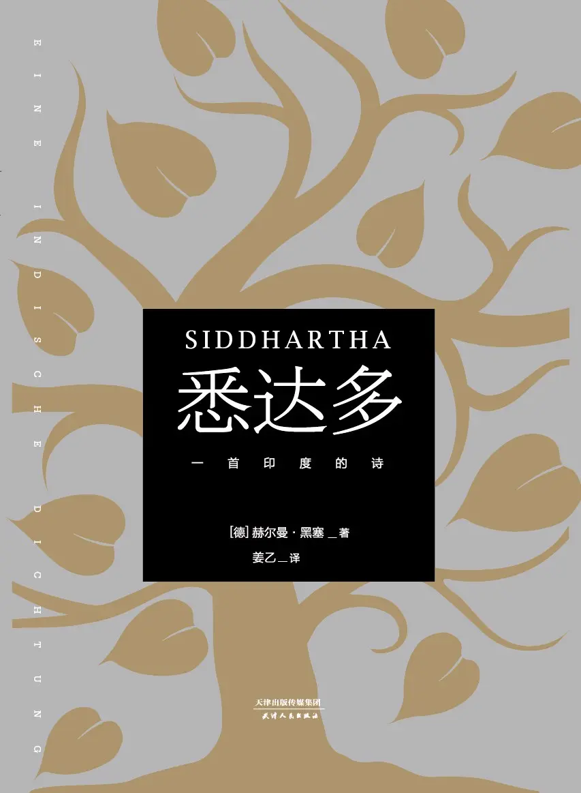

读《悉达多》
一首印度的诗
{kind=link}

《悉达多》 这本书的篇幅不长，坐在高铁上，两三个小时就看完了。我觉得它和 《小王子》 有点像，差不多的篇幅，都是讲述主角一开始对某些事情感到困惑，在经历了许多之后，变得释然。
之前还看过黑塞的另一本书 《荒原狼》，某种程度上，我觉得和《悉达多》的主题也是类似的，都是主角在寻找自我，接纳自我，寻找内心的安宁的过程。
《悉达多》的副标题是「一首印度的诗」，黑塞的文笔、姜乙的翻译让整本书阅读起来确实有种诗歌的美感。
悉达多出生于婆罗门，喜欢思考，懂得许多，但这些知识无法让他安宁，无论是婆罗门、沙门、还是佛陀；于是他让自己进入尘世，陷入在自己的欲望中，迷失在其中，最后陷入绝望，又从绝望中获得重生；重生后，又通过儿子明白了爱，最终，以往的思考、以往的各种经历、遇到的各种人，让他得以证道，修得圆满，获得了内心安宁。
悉达多最重要的能力是斋戒、等待和思考。斋戒解决了生存问题，从而可以耐心地、不急躁地等待，从而有时间可以思考。斋戒是他的底气，哪怕失去一切，一无所有都没关系，吃这个基本需求通过这样的形式得以缓解，活着就没什么需要担心的了。斋戒的苦他都能忍耐，又有什么苦他无法忍耐呢。能够斋戒、等待和思考，似乎就没什么他无法做成的事情了。
只有知识和思考，不去经历是不够的，有的东西是不可言说的，只能去经历、去体验。别人的经历是别人的，也无法言传给自己，唯有自己去体验一遍才能明白。所以知道那些大道理没什么用，重要的是活在当下，去感受生活，再从中思考。
这本书的篇幅不长，阅读起来也算有趣，推荐看看。
以下是我对故事情节的概述，也包含一些感想，折叠部分是书摘。
悉达多是婆罗门之子，婆罗门是印度的最高种性，他本身就不是一个普通的人。他长得俊美，人见人爱，谁都喜欢他。他从小接受婆罗门的教导，掌握了很多知识，在别人眼中，他会成为伟大的贤士、僧侣、婆罗门中的王。
但是悉达多的心中并不安宁，掌握了这么多的知识、前人的智慧，他依然不明白自己到底是谁、活着的意义是什么，他内心感到非常困惑。
此时，他碰到了几个 沙门，他们是苦行者，「一种由无声的激情、不顾一切去献身、无情的肉体灭绝构成的灼热气息回旋在在他们周身」。或许是被沙门的这种气质吸引，觉得可以从他们身上寻找到答案，悉达多决定投身沙门。
投身沙门，意味着他要舍弃婆罗门的地位，他的父亲本来盼望他成为新的婆罗门之王，必然不想让他离开。但是悉达多去意已决，他一直站着，从白天站到黎明，站到脸色苍白、摇摇欲坠，最终他的父亲虽然愤怒、不舍，但不忍心看着悉达多受苦，也明白无法留住他，只能选择放手让他去。临别前，父亲嘱咐他，如果寻到正果就回来与他分享，叫他修习；如果收获幻灭，也要回来，再一起祭奉诸神。尽管万般不舍，作为一个父亲，还是希望儿子最后能回来。
悉达多成为沙门，算是抛弃了整个家族，没有了牵挂、没有了家庭的束缚，一心一意地寻找自己的道。他的好基友乔文达也追随了他。
悉达多临行前和父亲的对话
“哦，悉达多！”他喊道，“你父亲会允许吗？”悉达多望向乔文达，觉醒的眼光迅捷如箭般看穿乔文达的心思、他的恐惧和他的默许。
“哦，乔文达，”他轻声道，“我们不必浪费口舌。明日破晓，我即开始沙门的生活。无须再谈论了。”
悉达多走进屋舍时，父亲正坐在树皮编织的席子上。悉达多站在父亲身后，直至父亲有所察觉。“是你吗？悉达多。”这位婆罗门道，“说吧，你为何事而来。”
“您允许的话，我的父亲。”悉达多道，“我来，是为跟您说，我恳请明天离开您的家，加入苦行者的行列。我渴望成为一名沙门。希望您不会阻挠。”
婆罗门沉默良久。星星攀上窗际时，屋内仍寂静无声。儿子交叉双臂纹丝不动地站着，一言不发。父亲也纹丝不动，一言不发地坐在席子上。唯有星斗在空中挪移。这时，父亲道：“婆罗门不该有激烈恼怒的言辞，但我心中确有不快。从你口中，我不想再听到这一请求。”
婆罗门说毕，缓慢起身。悉达多依旧交叉双臂，纹丝未动。
“你还在等什么？”父亲问。
“这您知道。”悉达多答。
父亲气愤地走出房间，气愤地走去他的床铺躺下身来。
一小时后，无眠的婆罗门起身。他来回踱步，继而走出房间。透过窗子，他看见双臂交叉，纹丝未动，依旧伫立着 的悉达多。他浅色的衣衫发着微光。父亲心生不安，又踱回房间。
又一小时后，无眠的婆罗门再次起身。他来回踱步，继而走出房间。月亮当空高悬。透过窗子，他看见依旧伫立的悉达多，双臂交叉，纹丝未动。月华照亮他裸露的脚踝。父亲心生忧虑，又踱回房间。
一小时后，两小时后，他不断起身。透过窗子，他瞭望月光中、星光中、黑暗中的悉达多。他默默地一次次起身，望向窗外纹丝不动伫立着的儿子。心中充满恼怒和不安，恐惧和痛苦。
破晓前的最后一小时。他走出房间，看见伫立于眼前的少年高大而陌生。
“悉达多。”他道，“你还在等什么？”
“您知道。”
“你打算一直这样站着等待，直至天明，直至正午，直至夜晚吗？”
“我会站着等待。”
“你会疲惫的，悉达多。”
“我会疲惫。”
“你会睡着的，悉达多。”
“我不会睡着。”
“你会死去的，悉达多。”
“我会死去。”
“你宁愿死去，也不愿服从你的父亲吗？”
“悉达多一向服从他的父亲。”
“那你会放弃你的打算吗？”
“悉达多会做他父亲要求的事情。”
第一缕晨光照进屋舍。婆罗门看见悉达多的双膝轻微战栗。但他的脸没有战栗。他的目光专注于远方。父亲意识到，悉达多已不在他身边。他已离开家乡，离开他。
父亲抚摩悉达多的肩膀。
“你即将步入林中成为一名沙门。”他道，“如果在林中，你寻得至高无上的幸福，就回来教我修习。如果你只收获幻灭，那也回来，我们再一道祭奉诸神。现在，去和你的母亲吻别，告诉她你的去向。至于我，清晨沐浴的时辰已到，我要去河边了。”
他把手从儿子肩头抽回，走出门去。悉达多试图移步时身体打了个踉跄。他控制身体，向父亲鞠躬后，走向母亲，去做父亲吩咐的事。
成为了门沙，他先是开始斋戒，他每日只进食一次，然后斋戒了十五日、斋戒了二十八日，日渐消瘦。
人活着，不过是吃喝拉撒，对悉达多来说，他可以忍受长达二十八日的斋戒，吃对他来说是很容易解决的事情，有得吃他就吃点，没得吃他就也可以斋戒度过。最基本的需要解决了，他也没有家庭的束缚，他其实是非常自在的，可以无拘无束地去思考一切。
这个时候的他，忍受了极其艰苦的斋戒，食欲都能克服的他，对一切都感到不屑。世界四处都是欲望，他觉得 「一切都是欺骗，都散发着恶臭，谎言的恶臭。一切欲望、幸福和优美皆为虚幻。一切都在腐朽。世界是苦涩的。生活即是折磨。」他此刻唯一的目的就是堕入空无。
沙门讲究苦行、禁欲，悉达多从沙门中学会了诸多克己的方法，但这种禁欲的修行也没有让他感到安宁，他觉得这不过是另一种逃避，一种对自己的麻醉，徒劳的努力。那些沙门长老六七十了也没有证道、涅槃，他仿佛看到了沙门的尽头，他觉得继续修习也不过如此。
悉达多和乔文达关于沙门修行的对话
达多从沙门处学到很多。他学会诸多克己之方法。他通过受苦，志愿受苦和战胜疼痛、饥饿、焦渴和疲惫，走向克己。他通过禅定，通过在一切表象前心神凝定走向克己。他学会诸多修炼之道。他曾千百次摆脱“我”。他曾整时整日停驻在无“我”中。这些修行均从“我”出发，终点却总是回归于“我”。尽管悉达多千百次弃绝“我”，逗留在虚无中，化为动物、石头，回归却不可避免。重归于“我”无法摆脱。在阳光中、月华下，在遮荫处和雨中，他重新成为“我”，成为悉达多，重新忍受轮回赋予的折磨。
乔文达，他的影子，和他生活在一起，也走了同样的路，付出同样的艰辛。他们在修习和献祭时鲜有交流。偶尔，两人得以同去村落为自己和师父们乞食。
“你怎么看，乔文达？”在一次乞食途中，悉达多问“你认为我们有进步吗？我们实现了目标吗？”
乔文达答：“我们学了不少。我们依然在学。你将成为伟大的沙门，悉达多。沙门长老常常赞叹，你学什么都快。你将成为圣人，哦，悉达多。”
悉达多道：“我并不这么看，我的朋友。至今我在沙门处学到的东西，乔文达，我本可以更快更便捷地学到。在花街柳巷的酒馆里，我的朋友，在脚夫和赌徒处，我都能学到。”
乔文达道：“悉达多你是在和我说笑。你怎么可能在那些贫乏者中学会禅定，学会屏息敛气，学会忍受饥饿和痛苦？”
悉达多轻声道，仿佛自言自语：“禅定是什么？什么是脱离肉体？斋戒是什么？什么是屏息敛气？那不过是逃避‘我’，是暂时从‘我’的折磨中逃出来，是对生命的虚无和痛苦的暂时麻醉。这种逃避、麻醉，即便是驱牛者也能在客栈中找到。他只消喝上几杯米酒或发酵的椰子奶就能忘掉自己。他将感受不到生活的痛苦，他被暂时麻醉，在米酒的杯盏间昏沉入睡。他同样能获得悉达多和乔文达通过长久修习才获得的弃绝肉体与停留在无‘我’中的感受。就是这样，乔文达。”
乔文达道：“你这样说，哦，朋友，你当然知道，悉达多不是驱牛车夫，沙门也不是酒鬼。酗酒者可以被麻醉，他可以获得短暂的逃避和休憩，但当他从幻觉中醒来时会发现一切依旧。他没有成为智者，没有积累知识，也没有进入更高的境界。”
悉达多含笑道：“我不知道。我从不是酒鬼。但是我，悉达多，在修习和禅定中只收获短暂的麻醉。我仍似一个在子宫内的婴孩，距离开悟、解脱十分遥远。这我知道。乔文达，这我知道。”
另一次，悉达多和乔文达一同走出森林，去村落为兄长和师父乞食。悉达多开口道：“那么，乔文达，我们走对了路吗？我们离知识近了吗？离解脱近了吗？抑或我们不过是在原地打转——我们原本不是要摆脱轮回吗？”
乔文达道：“我们学了很多，悉达多。许多还需修习。我们没有打转，我们在攀登，打转如同陀螺，我们却已升了几级台阶。”
悉达多问：“你认为我们景仰的师父，那位沙门长老多大年纪？”
乔文达答：“我猜他六十岁。”
悉达多道：“他已六十岁，依然没有证悟涅槃。他将七十岁，八十岁；你和我，我们也同样会变老，也将继续修习、斋戒、冥想。但我们不会证悟涅槃。他不会，我们也不会。哦，乔文达，我想，可能所有沙门都无法证悟涅槃。我们只寻得安慰、麻醉，我们只学了些迷惑自己的把戏。我们根本没有找到那条道中之道。”
“别这么说。”乔文达道，“不要耸人听闻，悉达多！这众多热忱、勤奋、圣洁的智者，婆罗门，众多严谨可敬的沙门，众多孜孜以求者，难道都寻不到那道中之道吗？”
悉达多的声音饱含悲痛和嘲讽。他饱含悲痛和嘲讽地轻声道：“不久，乔文达，你的朋友将离开这条与你并肩走过的沙门之路。我忍受焦渴，哦，乔文达，在这条路上，我的焦渴没有获得丝毫缓解。我一直渴慕知识，充满疑惑。年复一年，我求教婆罗门，求教神圣的吠陀。年复一年，我求教虔诚的沙门。年复一年。或许，乔文达，或许我去求教 犀鸟或黑猩猩也同样受益，同样获得才智，同样奏效。长久以来我耗费时间，现在仍未停止耗费，只为了获悉，哦，乔文达，人无法学会任何东西！我想，万物中根本没有我们称之为‘修习’的东西。哦，我的朋友，只有一种知识，它无处不在，它就是阿特曼。它存在于‘我’中，存在于‘你中，存在于一切中。因此我开始相信：这种知识最恼人的敌人莫过于求知欲和修习。”
乔文达停步，举起双手道：“悉达多，不要说这些话吓唬你的朋友！的确，你的言论让我恐惧。想想看，如果如你所云，根本不存在‘修习’，那祈祷的神圣，婆罗门种姓的荣耀和沙门的虔敬将被置于何地！哦，悉达多，这世间一切圣洁宝贵和令人尊敬的东西又都成了什么哪？”
此时，后来的 释加牟尼，乔达摩出现了（乔达摩本名是「悉达多·乔达摩」），人们传说他就是世尊佛陀，是那个证道成功的人。于是悉达多和乔文达便一起去看看这个圣人，希望从他身上找到证道的方法。
不过悉达多对乔达摩也不以为然，他觉得自己已经接触了太多的法义，但这些法义也没有让他安宁，乔达摩说的也不过是另外一些法义，不会有什么差别。
他们见到了乔达摩，确实非同一般，给人一种圆满的感觉。听了乔达摩的讲义，乔文达觉得这就是他要追随的人，这就是终极的奥义，决定从此追随乔达摩。
但悉达多听完了仍然感到困惑，他承认乔达摩达到了佛陀的圆满，乔达摩的法义是答案，能解释一切。但其中没有过程，只知道答案，不经历其中的过程，答案不过也是死记硬背的教条，无法让悉达多感到安宁。
于是他找到了乔达摩，和他进行了对话，希望乔达摩能给他解惑，但乔达摩没有解释什么，悉达多继续踏上了他的寻道之路。
悉达多和乔达摩的对话
悉达多则沉思步入林中。
在路上，他遇见了世尊乔达摩。他恭敬地向世尊问安。因见世尊目光慈蔼安详，这位青年便鼓起勇气，请求同世尊交谈。世尊默默首肯。
悉达多道：“昨天，哦，世尊，我有幸聆听您奇异的法义。我和我的朋友远道而来听您宣法。我的朋友将留在此处，他已皈依于您。我却要继续我的求道之路。”
“随你的心意。”世尊谦地说。
“我的话可能太过放肆。”悉达多继续道，“但如若我不坦率地将我的思想奉告世尊，我便无法离去。世尊佛陀， 您可否再留一步？”
佛陀默默首肯。
悉达多道：“世尊佛陀，您的法义令我钦佩。它清晰无瑕，证据确凿；您将世界以一条充满因果的永恒的链，一条从未有过任何瑕疵的链，展现在世人面前。世界从未如此清晰，从未如此不可辩驳地被呈示出来。婆罗门如若聆听您的法义，看到这个完满融通的世界，这个无瑕、清澈如水晶、不依赖偶然、不取决于诸神的世界，必定心潮澎湃。无论世界是善是恶，无论生命自身是苦是乐——这或许悬而未决，也并非最为本质——但是世界的统一，所有事件的休戚相关，大小事物席卷于同一潮流中，起源于同一起源，遵循同一生成及灭亡的律法，已从您完满的宣讲中得到阐明。哦，功德圆满的佛陀，只是，在您的法义中，在统一、逻辑完善的万物中却存在一个断裂之处。这一小小的缝隙让这个统一的世界呈现出些许陌生、些许新奇；呈现出些许迥异于从前，且无法被证实的东西：那就是您的超世拔俗，获得解脱的法义。这个小漏洞，这个小断裂，让永恒统一的世界法则变得破碎，失去效力。但愿您能宽恕我所提出的异议。”
乔达摩安静地听着，纹丝未动。这位功德圆满的觉者以慈蔼、谦和而清晰的声音道：“你聆听了法义。哦，婆罗门之子，难得你深深地思索法义。你在法义中发现了一个漏洞，一个缺口。愿你能继续深入地思考。但是你这勤勉之人，要警惕多谋善断及口舌之辩。无论辩词美或丑，聪慧或愚蠢，总有人赞许，有人鄙夷。你从我处所听之法义并非我之辩词。它的宗旨并非为求知好学之人闻释世界。它另有他图；它的宗旨乃是济拔苦难。这就是乔达摩的法义，别无其他。”
“哦，世尊佛陀，但愿您不怪罪我。”青年人道，“我并非为争辩与您交谈。您所言极是，辩辞微不足道。请容我再说：我未曾有刹那怀疑过您。未曾有刹那怀疑过您是佛陀，您已功德圆满。您已抵达无数婆罗门及婆罗门之子求索之巅峰。您已超拔死亡。您通过探索，求道，通过深观，禅修，通过认知，彻悟而非通过法义修成正果！——这就是我的想法，哦，世尊，没人能通过法义得到解脱！哦，世尊佛陀，您从未以言辞或法义宣讲您在证觉成道之际所发生的事！世尊佛陀的法义多教人诸善奉行，诸恶莫作。在明晰又可敬的法义中不包含世尊的历程，那个您独自超越众生的秘密。这就是我在聆听法义时的思考和认识。这就是我为何要继续我的求道之路——并非去寻找更好的法义，我知道它并不存在——而是为摆脱所有圣贤及法义，独自去实现我的目标，或者去幻灭。我将常常怀想今天，哦，世尊佛陀，我将怀想此刻，这个我亲眼见到圣人的时刻。”
佛陀安静地低垂眼帘，他那玄妙莫测的面庞散溢着彻底的安宁。“愿你的思索，”至尊悠然道，“愿你的思索无误。愿你实现目标！但请告诉我：你可见到我的僧团？ 那些皈依法义 的我的众多弟兄？你是否认为，陌生的沙门，你是否认为，放弃法义，回到极尽声色的世俗生活对他们更有益处？”
“这样的念头我从未有过！”悉达多高声道。
“愿他们遵循法义，实现宏愿！我无权论断他人的生活！唯独对自己的生活必须做出判断。我必须选择，必须放弃。我们沙门寻求弃绝于‘我’，哦，世尊。假如我皈依于您，哦，世尊，我担忧我的‘我’只是表面地、虚假地获得安宁，得到解脱。而事实上，我的‘我’却仍在生存、壮大。因为，我会将法义，我的后来者，我对您的爱，以及僧团当作我。”
乔达摩似笑非笑，他的明澈安如磐石。他善意地凝视这位陌生人且以一种隐微的神情同他道别。
“你很聪明，哦，沙门。”世尊道，“你能言善道，我的朋友。要提防不要太过聪明！”
佛陀缓步离去。他的目光和神秘的微笑永远镌刻在悉达多的记忆中。“这般目光和微笑我从未见过；如此行走、端坐之人我从未见过。”他想，“惟愿我也有这般目光及微笑，能如此行走及端坐。如此自由、神圣、隐晦，又如此坦率。如孩童，又饱含秘密。只有潜入自己最深处的人才能有这般诚挚的目光和步伐。无疑，我也将潜入自己之最深处探寻。”
“我见到一个人。”悉达多想，“一个唯一令我垂青之人。他人断不会再令我垂青，再无他人。也再无法义能吸引我，因为连这人的法义也并未令我屈臣。”
“佛陀劫掠了我。”悉达多想，“他劫掠了我，但他馈赠得更多。他夺走了我的朋友，那曾经信奉我，如今信奉他的朋友；那曾经是我的影子，如今是乔达摩的影子的朋友。而他所馈赠的，则是悉达多，是我的自我。”
就连佛陀的法义他也不信，那他还能怎么办呢？他要继续寻找，如何寻找？最终悉达多发现，一直向外求索是没有结果的，任何人的答案都不是自己的答案，或许自己的经历就是答案，而这么多年以来，一直都是听婆罗门的教导、沙门的教导、佛陀的教导，全都是些道理，他对自己却一无所知，没有经历过各种生活，所以他觉得应该活在当下，去感受自己的生活，从中寻找答案。
悉达多的觉醒
这位漫步的思考者自问：“你原先打算从法义里，从师父处学到什么？你学了很多，却无法真正学到的又是什么？”他最终发现：“答案是‘我’。我要学的即是‘我’的意义及本质。‘我’，是我要摆脱、要制胜的东西。‘我’，却是我无法制胜，只能欺罔、逃遁，只能隐藏的东西。当真！世上再没什么别的，像我的‘我’这样让我费解。是‘我’，这个谜，让我活着，让我有别于他人，让我成为悉达多！在世上，我最一无所知的莫过于‘我’，莫过于悉达多！”
这位漫步者被这种思绪捕获。他驻足，旋即又从这种思绪跃至另一种新的思绪中：“我对自己一无所知。一直以来，悉达多于我极为陌生。只因我害怕自己，逃避自己！我寻找阿特曼，寻找大梵，我曾渴望的是‘我’被肢解、蜕变，以便在陌生的内在发现万物核心，发现阿特曼，发现生命，发现神性的终极之物。可在这条路上，我却迷失了自己。”
悉达多睁大双眼，望向四周，一抹微笑不禁在他脸上荡溢开来。一种从大梦中彻底苏醒的感觉贯穿他的周身直至脚趾。他迈开双腿，如同一个完全清楚去向和使命的男人般疾步前行。
“哦，”他深吸了口气，释然道，“我不会再让悉达多溜走！不会再让阿特曼和尘世疾苦成为我思想和生命的中心。我再也不会为寻找废墟后的秘密而扼杀自己，肢解自己。无论是《瑜伽吠陀》《阿达婆吠陀》，还是其他任何教义我都不再修习。我不再苦修。我要拜自己为师。我要认识自己，认识神秘的悉达多。”
他环视四周，宛如与世界初逢。世界是美的，绚烂的；世界是奇异的，神秘的！这儿是湛蓝，这儿是灿黄，那儿是艳绿。高天河流飘逸，森林山峦高耸。一切都是美的。一切都充满秘密和魔力。而置身其中的他，悉达多，这个苏醒之人，正走向他自己。这初次映入悉达多眼帘的一切，这灿黄和湛蓝，河流和森林，都不再是摩罗的法术，玛雅的面纱，不再是深思的、寻求圆一的婆罗门所蔑视的现象世界中愚蠢而偶然的纷繁。蓝就是蓝，河水就是河水。在悉达多看来，如果在湛蓝中，在河流中，潜居着独一的神性，那这恰是神性的形式和意义。它就在这儿的灿黄、湛蓝中，在那儿的天空、森林中，在悉达多中。意义和本质绝非隐藏在事物背后，它们就在事物当中，在一切事物当中。
“我曾多么麻木和迟钝！”这位疾步之人心想，“如果一个人要在一本书中探寻意义，他便会逐字逐句去阅读它，研习它，爱它；他不会忽视每一个词、每一个字，把它们看作表象，看作偶然和毫无价值的皮毛。可我哪，我这个有意研读世界之书、自我存在之书的人，却预先爱上一个臆想的意义。我忽视了书中的语词。我把现象世界看作虚妄。我视眼目所见、唇齿所尝的仅为没有价值而表面的偶然之物。不，这些都已过去。我已苏生。我切实已苏生。今天即是我的生日。”
于是他让自己走进生活，走进喧闹的世界中，在此之前，他是一个读了万卷书的人，而现在，他还要走万里路。
思想和感官，法义和经验，都值得倾听
所有这自古有之的一切，悉达多一直熟视无睹。他从不在场。而现在，他归属其中。流光魅影在他眼中闪耀，星辰月亮在他心中运行。
在路上，悉达多也忆起他在祇树给孤独园中经历的一切。他曾在那里聆听佛陀神圣的法义，同乔文达告别，与世尊交谈。他记起他曾对世尊佛陀说过的字字句句。他惊讶地意识到，自己所言的“珍宝”，当时无从体会。他曾对乔达摩说：佛陀的法义或许并非其最宝贵最神秘的东西。佛陀的彻悟纪事才是无法言说、不可传授的珍宝——这恰恰是他现在要去经验的，他现在才刚刚开始去经验的。自然，他历来便知他的自我即阿特曼。自我如大梵般永恒存在。然而因他始终试图以思想之网去捕捉自我，而使得自我从未被真正发现。自然，肉体并非自我，感官游戏并非自我。如此看来思想也并非自我。才智并非自我。归纳结论，由旧思想编织新思想的可修习之智慧和技艺并非自我。不，这一思想境界乃是尘世的。如果一个人扼杀了感官意义上的偶然之我，却喂养思想意义上博学多能的偶然之我，他是不会寻得自我的。两者，思想和感官，均为美的事物；两者背后均隐藏终极意义；两者都值得倾听，值得参与；两者均不容蔑视亦不必高估。自两者中均可听到内在的秘密之声。除非内在声音命令他行动，悉达多别无所求。除非听凭内在声音的倡导，他绝不停下步履。为何乔达摩在那个时辰中的时辰，那个他正觉成道的伟大时刻坐于菩提树下？因为他听见一个声音。一个他内心的声音吩咐他在这棵树下歇息。他并非凭苦行、献祭、洗礼和祈祷悟道，也不是凭斋戒悟道，不是在睡梦中悟 道。他听凭了这个声音。如此听凭内心的召唤而非听凭外在的命令是善的。除了时刻等待这声音的召喚，再没什么行为是必要的。
途中，他在河边遇到了一个摆渡人，在他那里借宿了一晚，离开时，摆渡人说他们还会相见。
行经一个村舍，他看到了一个年轻妇人在洗衣服，妇人对他进行了挑逗，他亲吻了对方的乳头，就在他要扑倒对方时，内心说了声「不」，随后性欲就消退了。或许是对方不够美丽，不足以吸引悉达多？或许是他刚觉悟，内心还保留着一丝禁欲的想法？总之他这次忍住了。这里也再次体现了悉达多的俊美外貌，如果是一个寒酸的沙门，想必妇人也不会想挑逗他。
悉达多看到妇人的片段
正午时分，悉达多经过一个村舍。巷子里的孩子们正在茅屋前追逐嬉闹，玩南瓜子和蚌壳。他们看见陌生沙门便羞怯着四散开去。村舍尽头蜿蜒着一条小溪，一位年轻妇人正跪在溪边洗衣。悉达多上前问好时，妇人抬头嫣然一笑。悉达多见她眉眼盈盈处泛着秋波。他以途中惯用的方式向妇人问安，并询问距离大城的路程。这时她起身走向他，年轻的面庞上一副湿润的嘴唇闪着妩媚的光。她娇羞地问他可否用过饭，问他沙门是否真的在夜晚单独睡在林中，不能和女人同寝。说着，她用左脚尖抚摩他的右脚并做出《爱经》中称为“爬树”的动作——这是女人在挑逗男人共赴云雨时所做的动作。悉达多顿感热血沸腾。此刻，梦境再次袭来，他朝妇人俯下身去，亲吻她乳房上褐色的乳头。抬起头时，他看见妇人焦渴地微笑着，满是企盼的双眼细若游丝。
悉达多感到自己的渴望和涌动的性欲。他至今尚未碰过女人。在准备伸手去握住妇人时，他迟疑片刻。就在这一刻，他听见内心颤抖的声音说“不”。顿时，年轻妇人微笑的脸失去了全部魅力。她在他眼中不过是一只目光迷离的发情母兽。
他亲切地抚摸了她的脸颊，随后移步离开这位失望的妇人，健步踏入竹林。
接着悉达多来到城里，偶遇了城里的名妓伽摩罗，就想找对方感受一下什么是性爱，说是要向对方学习爱的技巧。 em…如果他不是看了他前面的纠结，会觉得悉达多还挺无耻、恶心的，不就是看到一个很漂亮的女人，性欲大发，想对方发生关系嘛，还要美其名曰「学习爱的艺术」，实际上就是去嫖。
悉达多去找伽摩罗之前还懂得先将自己收拾一番，显得自己干净，显露自己的俊美。见到伽摩罗后，言语中，悉达多甚至有要强暴的意思，但是伽摩罗说，强扭的瓜不甜，想吃甜的就搞到钱再来，有身份了再来。
悉达多不知道怎么搞钱，就问伽摩罗有没有什么路子，感觉还挺厚颜无耻的。伽摩罗应该也是被悉达多的美貌和知识吸引到，可能觉得有个这样的沙门过来还挺新奇吧，就问他会什么，他说「我会思考。我会等待。我会斋戒。」，这句话后面也出现了几次，只是顺序会略有不同。
「我会思考。我会等待。我会斋戒。」会思考，说明悉达多学识丰富，有智慧，脑子灵活；会等待，说明他很有耐心，不急躁；会斋戒，意味着吃喝拉撒对他而言都不是问题，没吃的大不了就不吃，吃喝是动物最基本的需求，既然吃喝不成问题，就没有别的问题了，就算一无所有，他都有退路，大不了就斋戒。这三者也是相辅相成的，能够斋戒，才能够等待，进而有时间用来思考，而不是拼命地只为了一口饭。
悉达多和伽摩罗的对话
悉达多见她如此美丽，心中欢喜。轿子临近时，他深鞠一躬，接着抬头注视那张靓丽妩媚的脸。他凝视她高挑眉毛下聪慧的双眼，并嗅到一缕从未闻过的沁人香气。这位美人微笑颔首后，在仆从的簇拥下转瞬消失在林苑中。
“我尚未入城，”悉达多想，“就天降此等吉兆。”他感到一阵冲动，想即刻跟入林苑。但转念又想起男女仆从们曾在门口轻视、怀疑而无礼地打量他。
“我还是个沙门。”他想，“依然还是苦行者和乞丐。我这样的人不该在此逗留，更不该踏入林苑。”他笑了起来。
这时，来了一位路人。悉达多向他打听这座林苑以及那个女人的名字。原来，林苑的女主人迦摩罗是城中名妓。除了这林苑外，她在城里还有一座宅邸。
之后他就怀揣着一个目标进了城。为了这个目标，悉达多踏遍城邑，走街串巷，累了便安静地伫立在广场或坐在河边的石阶上歇息。临近傍晚时分，他结识了一位理发店伙计。他先见他在拱门下阴凉处劳作，又见他去毗湿奴庙祈祷。悉达多为他讲述了毗湿奴和拉克什米女神的故事。当晚，悉达多在岸边的船里过夜并于次日一早，在其他客人还没到来前光顾了理发店。他让那位伙计为他刮了胡须，剪了头发并敷了上好的头油。之后，他去河里沐浴。
当美丽的迦摩罗于午后再次乘轿子回到林苑时，悉达多正站在门口。他向迦摩罗鞠躬致意并得到这位名妓的回敬。他向队尾的仆从示意，请求仆从向林苑女主人禀告，有位青年婆罗门渴望与她交谈。过了一会儿，仆从回来了，他吩咐正在等待的悉达多跟随他默默进了一座亭台。亭台里，迦摩罗正斜倚在卧榻上。她随即差遣仆从退下。
“你不就是昨天站在外面问候我的人吗？”迦摩罗问道。
“是的，我昨天就见到了你，问候了你。”
“但是昨天你不是留着胡须，长发上还布满灰尘吗？”
“你看得仔细。一切都尽收眼底。你见到的人是悉达多，为成为沙门而告别故乡的婆罗门之子。迄今做沙门已三年有余。但现在我已告别沙门之路，进了这座城。而你，是我入城之前见到的第一个人。哦，迦摩罗！我来，是为告诉你这个。你是让悉达多并未低垂眼帘而与之交谈的第一个女人。今后，如若我遇见漂亮女人，也不会再垂下眼帘。”
迦摩罗微笑着。她一边玩弄手中的孔雀翎摇扇，一边问道：“悉达多只是为了说这个，才来见我吗？”
“是为了说这个。也为感谢你的美貌，迦摩罗。如若不冒犯你，我想请求你做我的朋友和老师。因为对你所熟稔的艺术，我一无所知。”
迦摩罗大笑起来。“从来没有林中沙门来拜我为师！朋友。 也从来没有围着破旧遮羞布、留着长发的沙门来过我这里！许多青年来拜访我，其中不乏婆罗门之子。他们可是个个穿华丽的衣裳、考究的鞋子，头发飘香，腰缠万贯。沙门，那些青年都是置备停当才来见我。”
悉达多道：“我已开始向你学习。昨天已经开始。我已刮掉胡须，打理头发，抹了发油。我缺少得不多。你这仙姿佚貌的女人，我缺的不过是华美的衣裳、昂贵的鞋子和饱满的钱袋。你知道，悉达多曾致力于许多比这区区小事难得多的事业，且已完满。而我昨日下定决心要做的事，又怎能无法达成——我要成为你的朋友，同你学习欢爱之事！你将很快知道，迦摩罗，我曾学过比你教的学问更复杂的学问。那么，悉达多已抹了发油，却仅仅因为没有华美的衣服，没有名贵的鞋子，没有钱财，就无法让你满意吗？”
迦摩罗笑道：“是的，尊敬的人。你不能让我满意。你必须有衣服，华美的衣服；你必须有鞋子，名贵的鞋子；你不仅要腰缠万贯，还要为迦摩罗备上礼物。明白了吗，林中的沙门？这些你记住了吗？”
“我完全记住了。”悉达多大声道，“从如此美艳的嘴唇里说出的话我怎能不记住！你的嘴唇仿似新鲜开裂的无花果，迦摩罗。而我的嘴唇也同样又红又嫩。你将验证，它们是多么般配——但请告诉我，美丽的迦摩罗，你真的不畏惧一个要向你学习欢爱的林中沙门吗？”
“我为何要畏惧一个沙门，一个林中来的愚笨的沙门，一个从胡狼群中来，又根本不知女人为何物的沙门呢？”
“哦，沙门是强壮的，他无所畏惧。他恐怕会强迫你，美丽的女人。他恐怕会强夺你，给你带来痛苦。”
“不，沙门，我不怕。难道一个沙门或婆罗门会害怕有人来强夺他，侵吞他渊博的学识、他的虔诚和他深奥的思想吗？不会。因为这些只属于他自己。他只会把这些奉献给他想给的人。迦摩罗亦如此，欢爱亦如此。迦摩罗的嘴唇固然美艳嫣红，但你若试图违背迦摩罗的意愿去强吻它，便不会得到一丝甜蜜。尽管那嘴唇深知如何赋予甜蜜！勤学的悉达多，你要明白：情爱可以乞得，可以购买，可以受馈，也可在陋巷觅得，却唯独不能强夺。你想出了一个错误的主意。哦，如果一个如你般俊美的青年有如此想法的话，就实在太遗憾了。”
悉达多微笑着鞠躬致意：“那的确遗憾。迦摩罗，你说得极对！那将极为遗憾。不，我不愿放弃你芳唇间任何一滴甜蜜。你也不该放弃我的吻！此事已定：悉达多会再来。当他拥有了他缺少的华服、鞋子和钱财。但是，甜美的迦摩罗，你可愿再给我一些指示？”
“一些指示？为什么不哪？谁会不愿给一个从荒林狼群中来，又贫穷无知的沙门一些指示？”
“亲爱的迦摩罗，请告诉我：我该去哪里才能尽快寻得这三样东西？”
“朋友，许多人都想知道。你必须去做你会做的事情，以赚得钱财、鞋子和衣裳。否则一个穷人是不会有钱的。你会什么哪？”
“我会思考。我会等待。我会斋戒。”
“你真幸运。”告别时她道，“一扇扇门为你打开。这是怎么回事？难道你施了法术？”
悉达多道：“昨天我已告诉你，我会思考、等待、斋戒。你却认为这些没用。其实它们很有用。迦摩罗，你会看到的。你将看到，林中愚笨的沙门将学会并做出许多旁人不会的漂亮事情。前天我还是蓬头垢面的乞丐，昨天我就亲吻了迦摩罗；而很快，我会成为一名商人，拥有财富和一切你看重的东西。”
“好吧。”她表示赞同，“但如果没有我又会怎样？如果我不帮助你，又会怎样？”
“亲爱的迦摩罗，”悉达多说着挺直腰身，“来到你的林苑是我迈出的第一步。我决心跟你这个美丽的女人学习爱的艺术。那一刻，我下定决心并知道，我必定会实现愿望。我也知道，你会帮助我。当我站在林苑外，第一眼见到你时 我就知道。”
“如果我不愿意呢？”
“你会愿意的。你看，迦摩罗，如果你将一粒石子投入水中，石子会沿着最短的路径沉入水底。恰如悉达多有了目标并下定决心。悉达多什么都不做， 他等待、思考、斋戒。他穿行于尘世万物间正如石子飞入水底——不必费力，无需扎；他自会被指引，他任凭自己沉落。目标会指引他，因为他禁止任何干扰目标的事情进入他的灵魂。这是悉达多做沙门时学到的。愚人们称其为魔法。愚人以为此乃魔鬼所为。其实，魔鬼无所作为，魔鬼并不存在。每个人都能施展法术。每个人都能实现目标，如果他会思考、等待、斋戒。”
迦摩罗倾听着。她爱他的声音，爱他的目光。
“或许是的，”她轻声道，“如你所说，朋友。也或许因为悉达多是个俊美的男子，女人们喜爱他的目光，他才好运连连。”
悉达多和她吻别。“但愿如此，我的老师。愿我的目光永远让你欢喜，愿我的好运一直因你而降临！”
于是伽摩罗把他介绍给了商人，商人给了他一份工作，工作对他而言就是体验生活，用来搞点钱去找伽摩罗，工作中的得失对他而言无所谓，他在工作，又超然于工作之外，带着一种玩乐的心态。
悉达多和商人的对话，关于斋戒
“既然你一无所有，你靠什么生活？”
“我从未想过，先生。三年有余，我一无所有，却从未想过靠什么生活。”
“看来你靠他人钱财为生。”
“看来是。商人也靠他人钱财为生。”
“说得好。但商人却不白拿他人钱财，他以货物交易。”
“世事看似如此。各有索取，各有付出。这是生活。”
“恕我直言：如果你一无所有，你能付出什么？”
“人人都付出他拥有的。武士付出力气，商人付出货物，教师付出学问，农民付出稻谷，渔民付出鱼蟹。”
“非常对。只是，你付出什么？你究竟学过什么？又会什么？”
“我会思考。我会等待。我会斋戒。”
“就这些？”
“我想，就是这些！”
“这些有何用处？比如斋戒——斋戒有何益处？”
“斋戒极好，先生。对于没有食物的人，斋戒最为明智。假如悉达多没学过斋戒，他今天就必须寻找活计。不论在你这里，还是别处。饥饿迫使他行动。而事实上，悉达多能安静地等待。他从不焦急，从不陷于窘迫。即便长时间被饥饿围困，他仍能藐视饥饿。因此，先生，斋戒极好。”
他当初是想要感受生活，现在他满足了情欲，有工作，有大量的钱，但他并没有真正地参与其中，他还是会觉得自己是一个沙门，自己会思考，高别人一等。工作、周围的人对他而言都是玩乐，他只是一个旁观者。他在生活，却又没在生活。
他和伽摩罗经常见面，或许伽摩罗对他产生了爱意，甚至想要一个他的孩子，但伽摩罗感觉到他并没有真正地爱她，他享受和伽摩罗的性爱，但他并不愿意投入感情去爱。他甚至还嘲讽伽摩罗「你也谁都不爱——否则你怎会将爱当作艺术经营？像你我这类人大概都不会爱。」
悉达多对待工作和爱的态度
悉达多学会许多新知。他听得多，说得少。他牢记迦摩罗的话，在商人面前从未奴颜婢膝。这迫使商人与他平起平坐，甚至对他高看一眼。迦摩施瓦弥严谨地经营生意，饱含激情。悉达多则视一切如游戏。他努力学习规则，内容他并不记挂于心。
在宅邸中住了不久，悉达多便开始分担迦摩施瓦弥的生意。每日，他也在约定的时辰，登门拜访美丽的迦摩罗。他身穿华美的衣裳，足蹬精致的鞋子。很快，他也在造访时携带礼物。迦摩罗娇艳聪慧的嘴唇，温柔细腻的双手教会他许多学问。在欢爱的路上，悉达多仍蹒跚学步。他时常冒失，求索无厌地跌入情欲深渊。而迦摩罗则教会他，不付出情欲就难收获情欲这一《爱经》的根本。每种姿势，每个动作，每次抚摸，每次对视，身体的每个角落都隐藏秘密。这些秘密，为懂得唤醒它的人预备了幸福。她教导他，爱侣在交欢后不得倏忽分离。彼此仍要相互赞叹、抚慰。这样，双方才不会因过度性满足，而产生厌倦、落寞，产生辱弄或被辱弄的不快感受。在美丽聪慧的艺术家处，悉达多度过了绝妙时光。他成为她的学生、情人、朋友。对于现在的悉达多，生活的意义和价值是能和迦摩罗在一起，而绝非迦摩施瓦弥的生意。
商人委托悉达多书写重要的信件和契约，他也习惯在紧要事务上同悉达多商议。很快，他发现悉达多对稻谷、棉布、船务和买卖并不在行。他的运气是，和商人相比，他的冷静沉着更胜一筹。和陌生人打交道时，他懂得倾听的艺术，善解人意。“这位婆罗门，”迦摩施瓦弥曾对朋友说，“不是真正的商人，也不会成为真正的商人。在生意上，他从未投入热情。但是他掌握那些无为而治的成功者的秘密。或许他福星高照，或许他会施展法术，或许他从沙门处学到了什么。他似乎总在生意上游戏，从不全情投入，生意从来也无法牵制他。他从不担心失败，从不为损失烦忧。”
这位朋友建议商人：“你可将一部分生意交与他替你打理。三分之一的盈利归他所有；反之，他也须承担同等损失。如此一来，他必会用心些。”
迦摩施瓦弥采纳了这个建议。悉达多则安之若素。如有盈余，他便取他该得的那份。如果亏损，他会笑着说：“哎，你看，多么糟糕的交易！”
他显然对生意心不在焉。一次，他去村落收购大批稻谷。当他抵达时，稻谷已全部卖给其他商人。尽管如此，悉达多仍在村落逗留数日。他宴请农民，送给农民的孩子铜币，参加一次结婚庆典，随后满意而归。
“做得漂亮！”迦摩施瓦弥不情愿地喊道，“但事实上你是个商人。我必须得说！难道你的旅行只是为了赏玩？”
“确实。”悉达多笑道，“我确实为赏玩而去。否则为何？我见到许多人，欣赏了风景，收获了友谊和信任，结交了朋友。你看，亲爱的，如果我是你迦摩施瓦弥，见到生意落空，定是气恼地速速返回。可事实上，时间和金钱已经蒙受损失。而我享受了几天美妙时光，学到了知识，心情愉快，我和他人均未因我的气恼和草率而受到伤害。如果今后我再去那里，或许去收购下季收成，或许因为其他生意，那里友好的人们必将由于我这次没有表现得急躁和闷闷不乐而热情地款待我。释怀吧，朋友，不要因责备而伤害自己！如果有那么一天，你看到悉达多为你带来损失，你只消说一声，悉达多便自行离去。在那之前，我们还是善待彼此。”
商人也曾徒劳地尝试让悉达多相信，他靠迦摩施瓦弥为生。但悉达多认为他靠自己为生。确切地说，他们两人均靠他人为生，靠众人为生。悉达多从不过问迦摩施瓦弥的烦恼，而后者则烦恼颇多。他担心一笔生意行将失败，货物蒙受损失，借贷人无力偿还。无论如何，迦摩施瓦弥始终无法向悉达多证明，抱怨、急躁、平添皱纹或辗转反侧有何益处。一次，迦摩施瓦弥提醒悉达多，他的一切知识都是从迦摩施瓦弥处学来。悉达多反驳道：“最好不要和我开这样的玩笑！我从你那里学到一篓鱼的售价，借贷他人获得多少利息。这是你的学问。我和你从未学过如何思考，尊贵的迦摩施瓦弥，你最好向我学习如何思考。”
悉达多的确无心生意。做生意的益处，无非是令他有足够的钱财交与迦摩罗。尽管他获得的远超出他所需要的。他只是对曾经如同月亮般遥远而陌生的世人，他们的生意、手艺、忧烦，他们的娱乐和蠢行感到既同情又好奇。虽然他能轻而易举地和他们攀谈，与他们相处，向他们学习，但他深刻地认识到，将他同世人区分开来的，是他做沙门的经历。他看见世人以孩童或动物的方式生活，这让他既爱慕又蔑视。他看见他们为一些在他看来毫无价值的东西，为了钱，为了微不足道的欲望，为了可怜的尊严而操劳、受苦、衰老。他看见他们彼此责骂、羞辱，看见他们为那些令沙门付之一哂的痛苦恸哭，为那些令沙门不屑一顾的贫乏苦恼。
他接纳人们带来的一切。他欢迎兜售亚麻的商人，欢迎来向他借贷的人，也愿意长久地倾听乞丐讲述自己潦倒的生活，尽管他们的生活远不及任何一位沙门的生活贫穷。他对待富庶的外国商人，和对待替他刮脸的仆人，对待他故意被骗去几个铜板的街头香蕉小贩别无二致。如果迦摩施瓦弥来找他抱怨，或因一桩生意指责他，他也会好奇地耐心倾听，表示惊讶，试图理解，对他做适度的让步，接着离开他，去约见下一位需要他的人。许多人来找他做生意，许多人想蒙骗他，许多人试图探听他，许多人想博得他的同情，许多人想得到他的建议。他给出建议，表示同情，慷慨解囊，他甚至故意被欺骗。就像当年他热衷于侍奉诸神和做沙门时一样，他全神贯注，激情饱满地和众人游戏着。
时常，他感到内心深处有一个垂微的声音在轻声提醒，轻声抱怨。轻到几乎无从捕捉。他开始在某些时刻意识到自己正过着荒谬的生活。所有这些他做的事情无非是游戏。这游戏令他快活，偶尔让他愉悦。但是真实的生活却擦身而过，无法触及。如同一个人在玩球，他同他的生意以及周围的人玩耍。他冷眼旁观，寻得开心。而他的心，他存在的源泉却不在。那眼泉十分遥远，渐渐消失在视线之外，与他的生活无关。几次，他为他意识到的这一切感到惊恐。他希望自己也能满腔热情，全心全意地参与到孩子气的日常行为中。真正地去生活、去劳作、去享乐，而不只是一位旁观者。
他一直拜访美丽的迦摩罗。学爱情的艺术，做情欲的礼拜。在性爱中，付出和索取比在任何别处都更加水乳交融。他跟她闲谈，向她学习，给她建议，也接受她的忠告。迦摩罗对他的了解更胜于当年乔文达对他的了解。她跟他更加相像。有一次，他对她说：“你就像我。你跟大多数人不同。你是迦摩罗，不是别人。你随时可抵达内心安静庇护的一隅，如同回家。我亦如此。只有少数人才有这样的内心，尽管人人都可习得。”
“不是所有人都聪明。”迦摩罗道。
“不。”悉达多道，“聪明并非关键。迦摩施瓦弥聪明如我，但他心中没有这安静庇护的一隅。其他人内心虽有，但才智却如孩童。大多数人，迦摩罗，仿佛一片落叶，在空中翻滚、飘摇，最后踉跄着归于尘土。有的人，极少数，如同天际之星，沿着固定的轨迹运行。没有风能动摇他，他内心自有律法和轨道。在我认识的沙门和贤士中，有一位即是如此。他是一位功德圆满的觉者，我永远不会忘记。他就是乔达摩，世尊佛陀，那位宣法之人。每天有上千徒众听他宣法，追随他的脚步。但这些徒众却如同落叶，内心没有自己的教义和律法。”
迦摩罗含笑注视他。“你又提起他。”她道，“你的思想又如同一位沙门了。”
悉达多沉默不语。接着，他们以迦摩罗熟悉的三十种或四十种不同的体位做爱。她的身躯像豹子，像猎人的弓弦般柔韧。跟她鱼水相欢之人，必获得诸多快感，洞悉许多秘密。她和悉达多长久地做爱。她引诱他，再推辞他，强逼他，再顺从他，为他高超的技巧雀跃，直至他被完全征服，精疲力竭地躺在她身边。
名妓迦摩罗伏在他身上，久久地凝视悉达多的脸，凝视他疲惫的双睛。
“你是我见过的，”她思索着，“最好的情人。你比别人更强壮，更柔韧，更欲望强烈。你出色地学会我的艺术，悉达多。日后，待我年纪大些，我要有一个你的孩子。然而，亲爱的，你依然是个沙门。你并不爱我，也不爱任何人。难道不是吗？”
“或许是。”悉达多疲惫地说，“我就像你。你也谁都不爱——否则你怎会将爱当作艺术经营？像你我这类人大概都不会爱。如孩童般的世人才会爱。这是他们的秘密。”
日复一日地玩乐，所谓近朱者赤，近墨者黑，悉达多慢慢地沉沦了，开始寻欢作乐、骄淫放纵、挥金如土，变得世俗、懒惰、贪婪。他感到自己曾经那些美好的东西都已经死去，不再节制地生活、失去了思考的乐趣、丢失了禅定的习惯，他感到恐惧、悲伤，感到现在的一切毫无意义。
悉达多放弃了拥有的一切，离开了城镇。他心如死灰，起了轻生的念头，再次来到当初的河边，想着干脆死了算了，用死亡换取安宁。但就在他要跳河自杀时，「唵」声从灵魂深处响起，或许是一种求生的欲望吧，让他清醒了过来，放弃了轻生，大睡了一觉，醒来觉得仿佛是一次重生。
如今他已两鬓斑白，他厌恶过去骄纵的生活，但他也感激过去的生活，不经历这样的生活，就不会迎来绝望的时刻，就不会迎来顿悟重生的时刻。青壮年的他被知识阻碍，不顾肉体的感受；后来他沉溺肉体的感受，抛弃了曾经坚持的一切；如今他读了万卷书，也行了万里路，终于迎来了新生。
悉达多对自己重生的思考
悉达多微笑着目送他的背影，他依然爱乔文达的忠贞审慎。这醒后被“唵”充满的神圣时刻，他怎能不爱！这睡眠和“唵”的魔术，让他喜悦地爱上他所见的一切。此刻，他也见到曾经病入膏肓的自己，他曾不爱任何人，也不爱任何事。微笑着，悉达多目送远去的僧人。睡眠令他强健，但饥饿折磨他。他已两天未食，而他抵抗饥饿的能力已丧失许久。他伤感又幸福地回忆起他曾跟迦摩罗夸耀，他懂三种高贵又制胜的艺术：斋戒、等待、思考。这是他的宝，他的力，他不变的支撑。他用他勤奋艰辛的全部青年岁月修习这三门艺术，如今他却遗弃了它们，不再斋戒、等待、思考。为了肉体、享乐和财富这些无常之物、卑劣之物，他交付了它们！他陷入古怪的现实。看来，他已真正成为世人。
悉达多艰难地思考自己的处境，尽管他全无思考的兴致，却依旧强行思考。
那么，他想：无常之物已远离我。像儿时一样，我又一无所有，一无所能，无力又无知地站在阳光下。多么奇异！在青春逝去、两鬓斑白、体力渐衰的时候一切从儿时开始！他笑了。我的命运真奇特！不断堕落，直到空洞、赤裸、愚蠢地立于世间。可他并不伤感。不，他甚至想大笑，笑古怪愚蠢的世界。“你竟走了下坡路！”他笑着自语，瞥向河面，河水也欢歌着一路不断下行。他愉快亲切地望着河水，这不是那条他想溺亡的河吗？是前世，百年前，还是一场梦？
他想，我的人生之路确实古怪曲折。少年时，我只知神明和献祭。青年时，我只知苦修、思考和禅定；我渴求梵天，崇拜永恒的阿特曼。壮年时，我追随忏悔者生活在林中，漠视肉体，忍受酷暑严寒和饥饿。之后我又奇迹般地与佛陀和他至高的法义相遇，关乎圆一世界的真理如血液般在我体内奔涌，但我又不得不告别佛陀及其伟大学说。我跟迦摩罗学《爱经》，跟迦摩施瓦弥学做生意。赚钱又输钱。我学会养尊处优，满足肉体。我失去精神家园，荒疏思想，忘记圆不是吗？在这漫长曲折的路上，一个男人成了孩子，一位思考者成了世人。然而这条路又十分美好，然而我胸中之鸣鸟尚未死去。这是怎样的路！为重新成为孩子，为从头再来，我必须变蠢、习恶、犯错。必须经历厌恶、失望、痛苦。可我的心赞许我走这条路，我的眼睛为此欢笑。为收获恩宠，重新听见“唵”，为再次酣睡，适时醒来，我必须走投无路，堕入深渊，直至动了愚蠢的轻生之念。为了重新找到内在的阿特曼，我必须先成为愚人。为了再活，我必须犯罪。这条路还会引我去向何方？它如此古怪，泥泞不堪，或许是个旋回。它自便吧，我愿随它走。
他感到胸中沸腾着喜悦。
可这喜悦从何而来？他扪心自问。难道是酣眠抚慰了我？还是来自“我”口中的“唵”？或者因为我彻底摆脱过去，获得自由，像孩子般站在蓝天下？哦！摆脱羁绊，自由自在真好！呼吸这洁净的空气真好！而我出逃的地方却处处是香膏、香料、酒精和慵懒之气。我痛恨那富人、贪婪者和赌徒的世界！痛恨在那可怕世界里生活多年的悉达多！痛恨那自我放弃、自我毒害、自我折磨的悉达多，又老又恶的悉达多！不，我不会再重蹈覆辙！我做得不错，我必须赞美自己，我终结了自我憎恨，终结了可恶荒谬的生活！我赞美你，悉达多！愚蠢多年后又能思想和行动，又能听见心中鸣鸟的欢歌，又能跟随它！
他快活地赞美自己，好奇地听着腹中饥饿的叫声。他庆幸他最近品尝了痛苦、绝望和死亡的味道。假如他仍住在绵软温柔的地狱，待在迦摩施瓦弥的世界里赢钱、输钱，饱食终日，灵魂焦渴，那绝望赴死的一刻就不会到来。而绝望并未毁灭他。他心中的鸣鸟，快乐之源依然活着。他感到快乐并为此欢笑，白发映衬的脸庞绽放神采。
他想：“亲口品尝尘世的一切很好。尽管孩提时我已知道，淫乐和财富不属于善。我熟知已久，却刚刚经历，不仅用思想，还用眼睛、心灵和肉体经历。我庆幸我经历了它！”他久久深思自己的转变。鸟儿鸣叫着，像唱着他的欢歌。难道不是这只鸟已在他心中死去，难道他没感觉到它的死？不，是一些别的死了。一些早就渴望死掉的东西死了。那死去的，不是他在狂热的忏悔年代要扼杀的“我”？难道不是他渺小不安又骄傲的“我”，他一直与之对抗又总是败下阵来的“我”？总是死掉又复活的“我”，禁止欢乐却捕获恐惧的“我”？难道不是今天，在林中，在这条可爱的河里寻死的“我”？难道不是因为这死，他才像个孩子，充满信任、毫无畏惧又满怀喜悦？
现在悉达多也明白，为何他作为婆罗门和忏悔者时，曾徒然地与自我苦斗。是太多知识阻碍了他。太多神圣诗篇、祭祀礼仪，太多苦修，太多作为与挣扎！他曾骄傲、聪敏、热切，总是先行一步，总是无所不知，充满智慧，神圣贤明。他的“我”在他的圣徒气质中、傲慢中、精神性中隐藏起来。在他自以为用斋戒和忏悔能扼杀“我”时，“我”却盘踞生长着。于是他终于清楚，任何学问也不能让他获得救赎，他该听从内心的秘密之音。为此他不得不步入尘世，迷失在欲望和权力、女人和金钱中，成为商人、赌徒、酒鬼和财迷，直至圣徒和沙门在他心中死去。他不得不继续那不堪的岁月，承受厌恶、空虚，承受沉闷而毫无意义的生活，直至他最终陷入苦涩的绝望，直至荒淫且利欲熏心的悉达多死去。他死了。一个新的悉达多从睡眠中苏醒。这个新生的悉达多也将衰老，死去。悉达多将消逝。一切有形之物都将消逝。可今天他还年轻，还是个孩子。今天，他是快乐崭新的悉达多。
他思索着、微笑着倾听饥肠辘辘，感激地倾听蜜蜂嗡嗡，愉快地望向水波。他从未对一条河如此着迷，从未发觉河流的奔涌如此悦耳有力。他似乎觉得，河水要告诉他一些特别的事情，一些他从未领悟、尚待领悟的事情。在这条河中，他曾想自溺。而今，那衰老疲惫而绝望的悉达多已经溺亡，新的悉达多却深爱着湍流！他决定留在河边。
他曾想在河边自杀，顿悟后又从河水中寻得喜悦，于是他打算留在河边，这河曾经是他步入俗世的起点，他打算去找找曾经那个摆渡人。他们相互认出了对方，悉达多向摆渡人倾吐了一切，然后留在了摆渡人身边一起生活，一起倾听河水的声音。
悉达多和摆渡人瓦穌迪瓦的对话
“我没开玩笑，朋友。你看，你曾不计报酬地渡我过河。今天亦如此。还是请收下我的衣服。”
“难道先生要不穿衣服继续赶路？”
“啊，我倒希望最好不再赶路。船夫，你要是给我条旧围裙，收我做你的帮手就好了。最好做你的学徒，我要先学 会撑船。”
船夫狐疑地长久凝视陌生人。
“我认出你了。”终于，他开口道，“很久以前，二十多年前，我曾渡你过河，你在我的茅舍过夜，我们曾像好友般道别。你那时不是沙门吗？我已记不得你的名字。”
“我叫悉达多。你初次见我时，我的确是沙门。”
“悉达多，欢迎你。我叫瓦稣迪瓦。我希望你今天仍是我的客人，住在我的茅舍。跟我讲讲你从哪里来，为何你的华服成了累赘。”
他们抵达河中央。瓦稣迪瓦凝视船头，沉静地以有力的双臂摇橹，逆流而行。悉达多坐着，望向他，记起沙门岁月的最后一日，他心中曾对船夫升腾敬意。他感激地接受了瓦稣迪瓦的邀请。靠岸后，他帮船夫将船拴在桩上，随船夫步入茅舍。船夫端来面包和水，悉达多欢快地吃着，也吃了杧果。
黄昏时，他们坐在岸边一根残株上。悉达多向船夫述说起自己的来历和生活，述说那些历历在目的绝望时刻，直至 夜深。
瓦稣迪瓦专注地倾听。悉达多的出身和童年，苦学与探求，欢乐与困顿。船夫最大的美德是倾听：他乃少数擅长倾听之人。即便默不作声，讲述者也能感知他在安静、坦诚、满怀期待地倾听。他既不褒扬亦不挑剔，只是倾听。悉达多清楚，能向这样一位倾听者倾诉自己的生活、渴望与烦忧是何等幸运。
最后，悉达多讲到河边的树，自己的沉沦，神圣的“唵”，讲到他如何在酣眠后爱上这条河。这时，船夫闭起双眼，加倍专注地倾听。
二人长久缄默后，瓦稣迪瓦道：“正如我所料，河水向你诉说，与你对话，它也是你的朋友。这好极了！留在这里吧，悉达多，我的朋友。我曾有过妻子，她的床仍在我的旁边，但她已过世多年，我独自生活。你和我一起生活吧，吃住对我们来说甚为充裕。”
“我感谢你。”悉达多道，“我感谢你并接受你的邀请。此外，瓦稣迪瓦，我还要感谢你专心听我倾诉！懂得倾听之人极少。而像你这样懂得倾听的人我尚未见过。我需向你求教。”
“你自会学到。”瓦稣迪瓦道，“却不是跟我。我跟河水学会倾听，你也该跟它学。河水无所不知，求教河水你可学会一切。你瞧，你已学会足履实地，学会沉寂并向深处探寻。富有而高贵的悉达多要成为摆渡人。博学的婆罗门悉达多要成为船夫。这也是河水所示。你还会跟河水学会别的东西。”
沉吟片刻后，悉达多道：“别的指什么，瓦稣迪瓦？”
瓦稣迪瓦起身。“不早了，”他道，“该休息了。我无法告诉你‘别的’指什么。哦！朋友，你自会学到。或许你已学会。你看，我不是导师，不擅言辞和思考。我只懂倾听，保持驯良，其他我均未学到。若我能言善道，或许我会成为智者，但我只是个船夫。我的任务是渡人过河。我渡过千万人过河，他们将我的河视作旅途中的障碍。他们出门赚钱、做生意、出席婚礼或去进香，而这条河挡了他们的路。船夫要帮他们迅速渡过障碍。对于这些人中为数不多的四五人来说，河水却并非障碍，他们凝神听水。同我一样，河水在他们心中圣化。我们该休息了，悉达多。”
悉达多留在船夫处学习摇橹。若渡口无事，他便跟随瓦稣迪瓦去稻田耕作，去捡木头、摘芭蕉。他学制船桨，学补船和编篓，无论学什么都兴致盎然。时日如飞，他跟河水比跟瓦稣迪瓦学到的更多，他永不停歇地向河水求教，首要的是学会抛弃激情和期盼，不论断、无成见地以寂静的心、侍奉和敞开的灵去倾听。
他愉快地生活在瓦稣迪瓦身边。瓦稣迪瓦不喜多言，悉达多很少能激起他交谈的兴致。他们只是偶尔交流几句深思熟虑的话。
“你，”一天，悉达多问瓦稣迪瓦，“你也跟河水悟出 ‘时间并不存在’ 这一秘密吗？”
瓦稣迪瓦现出明朗的微笑。
“是的，悉达多。”他道，“你的意思是，河水无处不在。无论在源头、河口、瀑布、船埠，还是在湍流中、大海里、山涧中。对于河水来说只有当下，既没有过去的影子，也没有未来的影子？”
“是的。”悉达多道，“我领悟到这个道理后，认出我的生活也是一条河。这条河用幻象，而非现实，隔开少年悉达多、成年悉达多和老年悉达多。悉达多的前世并非过去，死亡和重归梵天亦并非未来。没有过去，没有未来。一切都是本质和当下。”
悉达多醉心地讲着，这番领悟让他深感幸福。哦，难道不是时间令人痛苦？难道不是时间折磨人，令人恐惧？人 一旦战胜时间、放逐时间，一切世上的苦难与仇恨不就被战胜、被放逐了？他醉心地讲着，瓦稣迪瓦则微笑着点头赞许。他轻抚悉达多的肩膀，接着去继续劳作。
又一次，正值雨季。河水暴涨，水势凶猛。悉达多问：“朋友，河水可有许多声音？王的声音、卒的声音、牡牛的声音、夜莺的声音、孕育者的声音、叹息者的声音，成千上万的声音？”
“正是。”瓦稣迪瓦点头道，“一切受造者的声音皆在其中。”
“你可知道，”悉达多继续道，“当万千声音同时响彻耳畔时，它所说的那个字？”
瓦稣迪瓦幸福地微笑着，俯身靠近悉达多，在他耳畔说出神圣的“唵”。这也正是悉达多听到的。
[…]
此刻，悉达多怀念这位警示并唤醒世人的伟大导师。他曾听他宣法，曾满怀敬意地凝视他的圣容。悉达多心怀爱意地思念佛陀，回忆他的完满之路，不禁微笑着记起年少时他对佛陀讲过的那番老成又傲慢的话。尽管他并未接受佛陀的法义，但他早已知道，他无法与乔达摩分离。不，一位真正的求道者，真正渴求正觉成悟之人不会接受任何法义。但得道之人却认可任何法义、道路和目标。没有什么能将他和其他万千驻永恒、通神冥的圣贤隔绝。
佛陀乔达摩即将病逝涅槃，信徒们纷纷去看望他，一些人需要渡河而过，而其中有一个人是伽摩罗 ⸺ 悉达多曾经的情人。她带着一个孩子 ⸺ 正是他们两个的孩子 ⸺ 一起去看望佛陀，年纪很小的儿子不知道为什么要去看这么一个快死的老人，很是抗拒。当伽摩罗靠近渡口时，不知道哪来的小黑蛇咬了她一口，她中毒了，悉达多一直在身边陪伴着她，直至身亡。
留下的儿子，就和悉达多一起生活在了渡口。但这个孩子习惯了城里富足的生活，并不喜欢这里贫苦的生活，也和这个从未见面的父亲不熟，一直和他作对。悉达多都是顺从着他，从不责骂他，打他，但孩子反而更看不起这个老人。
孩子的反抗，让悉达多和瓦穌迪瓦都很头疼，果然「他人即是地狱」，只要和别人产生了关系，关系中就会带来烦恼，让自己不自由。悉达多放心不下自己的儿子，担心他一个人成长会变坏，所以始终不愿意对儿子放手，成长是儿子自己的课题，悉达多却想干预，把孩子「困」在自己的身边。
后来儿子忍受不了逃走了，悉达多追到城中还是没找到孩子，城中的一切让他会想起他曾经的生活，仿佛又重新经历了一次，让他感到有些恍惚，最后他累了，也放手了。
儿子的出现也激发了悉达多的爱意，让他体会到深爱一个人的感觉，爱一个人的痛苦，爱一个人会做愚蠢的事。爱，让悉达多进一步走向圆满。
悉达多和儿子
孩子哭着，瑟缩着出席了母亲的葬礼，又阴郁着，怯生生地听悉达多唤他儿子，欢迎他留在瓦稣迪瓦的茅舍。他面色苍白，整日坐在母亲坟旁，不吃不喝，目光呆滞，心扉紧锁着抗拒命运。
悉达多疼惜他，由着他，尊重他的悲伤。悉达多理解，儿子跟他不熟，不能像爱父亲那样爱他。渐渐地，他发觉这个十一岁的孩子已被母亲宠坏。他在富有的环境中长大，习惯了美食、软床、使唤仆从。悉达多明白，一个悲伤又骄恣的孩子不会突然甘心待在陌生贫穷的地方。他不强迫他，而是为他做事，把最好的留给他。他希望善意的忍耐能慢慢赢得孩子的心。
孩子来时，他曾说自己富足而幸福。日子一天天过去，孩子却仍旧自负而心硬，对他冷漠疏远，不愿劳作，冒犯长辈，偷摘瓦稣迪瓦的果子。悉达多开始意识到，孩子带来的不是幸福安宁，而是痛苦忧虑。可是他爱他，宁愿忍受爱的痛苦和忧虑，也不愿接受没有他的幸福和快乐。
小悉达多住进茅舍后，两位老人就分了工。瓦稣迪瓦独自承担渡口的工作，悉达多则和儿子忙于茅舍和田间活计。几个月来，悉达多一直期待儿子能理解他，接受他的爱，甚至对他的爱有所回应。几个月来，瓦稣迪瓦也默默观望，期待。一天，小悉达多又折磨父亲，对他任性不逊，还打碎两个饭碗。当晚，瓦稣迪瓦把朋友叫到一边，同他交谈。
“原谅我，”他道，“出于善意，我得和你谈谈。我看到你折磨自己。你很苦恼。亲爱的，你的儿子让你担忧。我也担忧他。这只小鸟在另一个巢穴过惯了另一种生活。他不像你，出于憎恶和厌倦逃离城邑和富裕的生活。他是违背意愿，不得不放弃那一切。我问河水，哦，朋友，我多次求问河水，可河水只报以嘲笑。它笑我，也笑你。它颤抖着嘲笑我们的愚蠢。水归于水。年轻人归于年轻人。你儿子待在一个让他不快的地方。你也问河水，听取河水的意见吧！”
悉达多苦闷地望着他可亲的脸，这张脸上细密的皱纹间驻满喜乐。“我怎能和他分开？”他羞愧地轻声道，“亲爱的，给我些时间！你看，我正努力以爱和善意的忍耐争取他，赢得他的心。河水也将跟他交谈。他也是奉召而来。”
瓦稣迪瓦的笑容愈加温和。“是的，他也奉召而来。他也来自永恒的生命。可是你和我，我们知道他为何奉召而来？走什么路？做什么事？受什么苦？他受的苦不会少。心硬又傲慢的人会受很多苦，会迷路，会做错事，会担许多罪孽。我亲爱的，告诉我：你不教育你的儿子？不强迫他？不打他？不责罚他吗？”
“不，瓦稣迪瓦，这些我不做。”
“我知道。你不强迫他，不打他，不控制他，因为你知道柔胜于刚，水胜于石，爱胜于暴。很好，我赞赏你。可你不强迫不责罚的主张，难道不是一种过失？难道你没有用爱束缚他？没有每天用善和忍，令他羞愧为难？你难道没有强迫这自大放肆的孩子，同两个视米为佳肴的老家伙住在茅舍里？老人的思想可不会与孩子相同。他们心境苍老平静，连步态都跟孩子不同。难道这一切不是对孩子的强迫和惩罚？”
悉达多错愕地垂下头，轻声问：“你说我该怎么办？”
瓦稣迪瓦道：“送他回城里，回他母亲的宅邸，把他交给宅中仆从。如果那里已无人，就带他去找个老师，不是为学知识，而是为让他回到孩子中，回到他的世界。这些你难道没想过？”
“你看透了我的心。”悉达多凄然道，“我常有此想法。可是你看，我怎能把这个心硬的孩子送到那个世界去？难道他不会放肆地沉迷于享乐和权力，不会重复他父亲的过失，不会完全迷失于轮回之中？”
船夫绽放笑容。他温柔地抚摩悉达多的臂膀：“朋友，去问河水吧！你听，它在发笑！你果真相信，你的蠢行，能免除他的蠢行？难道你通过教育、祈祷和劝诫，能保他免于轮回？亲爱的，你曾对我讲过引人深思的婆罗门之子悉达多的故事，难道你完全忘记了？是谁保护沙门悉达多免于罪孽、贪婪和愚昧？是他父亲的虔诚，老师的规劝，还是他自己的学识和求索？人独自行过生命，蒙受玷污，承担罪过，痛饮苦酒，寻觅出路。难道有人曾被父亲或老师一路庇护？亲爱的，你相信有人能避开这道路？或许小悉达多能，因为你爱他，你愿意保他免于苦难和失望？但是就算你替他舍命十次，恐怕也不能扭转他命运的一丝一毫！”
瓦稣迪瓦从未说过这么多话。悉达多诚挚道谢后，忧虑着步入茅舍，久久无法入睡。瓦稣迪瓦的话他明白，且都曾思量过。但那只是认知，他无法行动。因为比认知更强烈的是他对孩子的爱，他的柔情，他对失去孩子的恐惧。他何曾如此迷失？何曾如此盲目、痛苦，何曾如此绝望又幸福地爱过一个人？
悉达多无法接受朋友的忠告。他无法送走儿子。他任由他命令他，轻视他。他沉默，等待。每日在内心默默发动善意和忍耐的无声之战。瓦稣迪瓦也宽容体谅地沉默着，等待着。在隐忍方面，他俩都堪称大师。
一次，悉达多在孩子脸上看见迦摩罗的影子。他不禁记起年轻时迦摩罗曾对他说过：“你不会爱。” 他赞同她的话。那时，他把自己比作孤星，把孩童般的世人比作落叶。尽管他在她的话中听到责备。的确，他从未忘形地热恋一个人。从未全然忘我地去为了爱做蠢事。他从未爱过。他认为这是他与孩童般的世人的根本区别。可是自从儿子出现，他悉达多却成了完全的世人。苦恋着，在爱中迷失；因为爱，而成为愚人。而今，他感受到生命中这迟来的强烈而奇异的激情，遭苦难，受折磨，却充满喜悦，获得新生，变得富足。
他切实感到，对儿子盲目的爱，是一种极为人性的激情。它或许就是轮回，是混沌之泉，黑暗之水。同时他也感到，爱并非毫无价值。它源自天性，是一种必需。爱的欲望该得到哺育，痛苦该去品尝，蠢行该去实践。
儿子最近让他做尽蠢事。他让他低三下四，他的放肆让他每日受尽屈辱。这个父亲既不会取悦儿子，也无法让儿子敬畏。他是个善良、仁慈而温和的好人；或许还很虔诚，是个圣人——可这些德性不能赢得孩子的心。这位父亲让儿子感到无聊，他把他困在这破败的茅舍里，让他感到烦闷。他对他的无礼报以微笑，对他的辱骂报以友善，对他的恶毒报以宽容。这难道不是这个老伪君子可恶的诡计！他宁愿他恐吓他，虐待他。
这天，小悉达多爆发了。他公然反对父亲。父亲派他去捡柴，他却不肯踏出茅舍，他傲慢恼怒地站着，用力踏地，紧攥拳头，仇视而轻蔑地朝父亲吼叫。
“你自己去捡柴吧！”他大发雷霆，“我不是你的奴仆！我知道你不会打我，你根本不敢！我知道你要用你的虔诚和宽容来惩罚我，羞辱我。你希望我像你一样虔敬、温顺、明智！可是我，你听着，我要让你痛苦。我宁愿做扒
“我们的船桨可能已经丢失。”瓦稣迪瓦答。
悉达多清楚朋友的想法。他想，孩子为报复，为阻止他们追赶，会将船桨扔掉或损坏。果然，船里没有船桨。瓦稣迪瓦指着船底，微笑望着朋友，似乎在说：“难道你没看出他的意思？难道你没看出他不愿被人跟随？”可他并未说出。他开始动手制作新船桨。悉达多则同他道别，去寻找逃跑的孩子。瓦稣迪瓦没有阻拦。
悉达多在林中走了很久，他意识到寻找毫无意义。儿子要么早已走出森林，抵达城里；要么还在路上。但他若见有人跟踪，定会躲藏起来。他继续思考，发觉自己并不为儿子担心。他心里清楚，儿子既不会丧命，也不会在林里发生意外。可他却不能停下脚步，不是为救孩子，只为盼着或许还能见上一面。他就这样一直走到城里。
在临近城里的大路上，他驻足于那座曾经属于迦摩罗的漂亮花园门口。就是在这里，他第一次见到轿中的迦摩罗。记忆重现，他仿佛看见一位年轻沙门，胡须蓬乱，赤身露体，头上布满灰尘。悉达多长久驻足。透过敞开的门，他朝花园望去，见穿僧衣的僧人们在苍翠的树下走动。
他伫立着，沉思着。过去的生活似一幅画卷展现眼前。他伫立良久，望着往来的僧人，就像望着年轻的自己和迦摩罗漫步于苍翠的树下。他清晰地看见他如何受到迦摩罗的款待，如何得到她的第一个吻，如何自负而轻蔑地回顾他的婆罗门岁月，自豪又充满渴望地开始世俗生活。他看到迦摩施瓦弥，看到仆人、盛宴、赌徒、乐师，看到笼中的知更鸟。他似乎坠入轮回，再次经历一切，再次衰老、疲惫、恶心，再次渴望解脱，再次靠神圣的“唵”得到治愈。
在花园门口长久伫立后，悉达多意识到，他进城的渴望是愚蠢的。他不能帮助儿子，也不该牵绊他。他深爱着逃走的孩子。他的爱像一道伤口。他感到伤口的存在不该只为在心中溃烂，它应该风化、发光。
可眼下这伤口尚未风化发光。它让他感到忧伤。在这块伤口上，去追寻儿子的渴念已消失无踪，徒留虚空一片。他忧伤地席地坐下，感到内心的一些东西正在死去。他感到虚无，看不到快乐，也没有目标。他坐下，禅定，等待。他跟河水学会了等待、忍耐、倾听。他坐在尘土中倾听，倾听自己疲惫又哀伤的心跳，等待某种声音。他倾听了个把钟头，再也看不见任何景象，听凭自己沉沦，陷入空无，看不到前路。当伤口灼痛时，他就无声默诵“唵”，让自己被“唵”充满。
花园里的僧人见他坐了许久，花白的头发上已满是尘土。一位僧人过来，在他面前放下两只芭蕉。他并未看见。恍惚中，一只抚摩他肩头的手将他唤醒。他马上认出这种温柔又忠贞的抚慰，回过神来。他起身，向追来的瓦稣迪瓦问好。他望着瓦稣迪瓦可亲的脸，细密的皱纹间洋溢的笑，望着他明亮的双眼，也跟着微笑起来。他看见了面前的芭蕉，拾起来，递给船夫一只，自己吃一只。之后，他跟随瓦稣迪瓦默默穿过森林，回到渡口。他们都不提今天发生的事，不提孩子的名字，不提他的逃走，谁也不触碰伤口。悉达多回到茅舍后躺在床上。瓦稣迪瓦走来递给他一碗椰汁，发现他已经睡着。
儿子的出走，给悉达多留下了一个伤口，只能依靠时间慢慢抚平。悉达多还是时而会想起儿子，有一天他控制不住，又想去找儿子，结果在河面中看到了自己，想起了父亲。悉达多又何尝不是给他的父亲留下了一个巨大的伤口呢，他与父亲一别之后，就再也没有回去过。儿子带给他的痛苦，他也曾带给他的父亲。
他回去找瓦穌迪瓦倾诉，再不断地诉说中、在瓦穌迪瓦耐心的倾听中，他的痛苦得到了抚慰。他倾听河水，河水从万千种声音，最后汇聚成一个声音，即「唵」，此刻悉达多终于圆满。
「唵」⸺ 悉达多的圆满
伤口仍久久灼痛。悉达多见到携儿带女的船客总不免羡慕，哀怨：“为何我不拥有这万千人拥有的幸福？即便恶人、窃贼、强盗，也有爱他们、他们爱的孩子，为何独我没有？”他就这样简单地、毫无理智地哀怨着，和世人一模一样。
如今，他待人比从前少了聪明、傲慢，多了亲切、好奇、关心。如今，他见到那些常客——孩童般的世人，商人、兵士、妇人，不再感到陌生：他理解他们。理解并同情他们不是由思想和理智，而是由冲动和欲望掌管的生活。他感同身受。尽管他已近乎完人，只承受着最后的伤痛，却视世人如兄弟。他不再嘲笑他们的虚荣、欲望和荒谬，反而通晓他们，爱戴敬重他们。母亲对孩子盲目的爱，父亲痴愚盲目地为独子骄傲，卖弄风情的年轻女人盲目狂野地追求珠宝和男人猎艳的目光——对现在的悉达多来说，所有这些本能、简单、愚蠢，却极为强烈鲜活的欲望不再幼稚。他看到人们为欲望而活，因欲望不断创造、出行、征战，不断受难。他爱他们。他在他们的每种激情、每种作为中看到生命、生机，看到坚不可摧之物和梵天。他在他们盲目的忠诚、盲目的强悍和坚韧中看到可爱和可敬之处。世人和学者、思想者相比应有尽有，除了唯一微不足道的东西：自觉。对生命整体的自觉思考。时常，悉达多甚至怀疑自觉的价值被高估，或许它只是思想者的天真。思想者只是思想的孩童般的世人而已。其他方面，世人和智者不仅不相上下，反而时常考虑得更深远。就如同动物在必要时强劲决绝的作为，往往胜于人类。
一种认知逐渐在悉达多头脑中壮大，成熟。究竟什么是智慧？什么是他的目标？不过是在生命中的每个瞬间，能圆融统一地思考，能感受并融入这种统一的灵魂的准备，一种能力，一种秘密的艺术。这种认知在悉达多头脑中繁盛，又反映在瓦稣迪瓦苍老的童颜上：和谐、喜悦、统一，对永恒圆融世界的学识。
可伤口依然灼痛。悉达多苦苦思念着儿子。他耽于爱和柔情，任凭痛苦吞噬，体验一切爱的痴愚。这火焰无法自行熄灭。
这天，伤口又灼痛得厉害。悉达多被渴望折磨。他毅然渡河登岸，进城寻子。正值旱季的河水轻柔涌动，水声却有些奇特：它在笑！它的确在笑。它清脆响亮地嘲笑着老船夫。悉达多停下脚步，俯身贴近水面倾听。他看见平静的水面上倒映出他的脸，这张脸似乎让他记起遗忘的往事。他沉思片刻，继而发觉这张脸跟一张他熟悉、热爱又敬畏的脸十分相似。那是他父亲的脸，那个婆罗门的脸。
他记起年轻时曾如何迫使父亲答应他出门苦修，如何同父亲告别，如何离家，之后又再未回去。难道父亲不是为他受苦，如同他现在为儿子受苦？难道父亲不是再没见到儿子，早已孤零零地死去？这难道不是一幕奇异又荒谬的谐剧？不是一场宿命的轮回？
河水笑着。是的，正是如此。一切未受尽的苦，未获得的救赎都会重来。苦难从未改变。悉达多重新登船，返回茅舍。他想着父亲、儿子，内心挣扎着，几近绝望。他被河水嘲笑，也想跟随河水大声嘲笑自己和整个世界。啊，这伤口尚未风化，他的心仍在抗拒命运，他的苦难仍未绽放喜悦和胜利的光华。可他却感受到希望。回到茅舍后，他迫切要向瓦稣迪瓦倾诉，向这位倾听大师敞开心扉。
瓦稣迪瓦正坐在茅舍里编一只篮篓。他的视力开始衰退，力大不如前，已经不再渡。只是他股上的善意和乐未曾改变。
悉达多坐在老人身边，慢慢说起他从未说过的事。说他上次进城寻子后内心留下的伤口，说他羡慕那些幸福的父亲，说他对这愚念的认识，说他内心徒劳的挣扎。他坦白最狼狈的事，无所顾忌地暴露伤口。他说他今天如何被灼痛击败，孩子气地逃过河，非进城不可，河水又如何嘲笑他。
他说了许久。瓦稣迪瓦安静地倾听。悉达多感到瓦稣迪瓦此刻的倾听比以往更加有力。他将痛苦、惶恐、隐秘的希望传递给他，又被他传递回来。向这位倾听者袒露伤口，如同在河中沐浴，伤口冷却后与河水合一。在不断的述说、坦白和忏悔中，悉达多愈加感到，倾听者不再是瓦稣迪瓦，不再是一个人。这位不动声色的倾听者接纳他的忏悔，如同树木接纳雨水。他是神的化身，是永恒的化身。悉达多不再舔舐伤口，对瓦稣迪瓦认知的改变占据了他。他认知得愈深，愈不再诧异，愈看得清楚。一切都自然，有序。瓦稣迪瓦一直如此，只是不为他所知。即便是他自己，也几乎未曾改编。他感到他看待瓦穌迪瓦，如同世人看待诸神。这不会长久。他一边述说，一边在心中与瓦稣迪瓦告别。
悉达多讲罢，瓦稣迪瓦亲切地默默望向他，双目恍惚。无声的爱和喜悦、理解和明了闪耀在他周身。他拉起悉达多的手，走向岸边，坐下。他们一起微笑着望向河水。
“你听见了河水的笑声。”瓦稣迪瓦道，“但你尚未听见全部声音。我们倾听吧，你会听到更多。”
他们倾听河水温柔的合唱。悉达多凝视水面，望见流动的水上浮现出许多画面：他看见孤单的父亲哀念着儿子，孤单的自己囚禁在对远方儿子的思念中；他看见孤单年少的儿子贪婪地疾进在炽烈的欲望之路上。每个人都奔向目标，被折磨，受苦难。河水痛苦地歌唱着，充满渴望地歌唱着，不断涌向目标，如泣如诉。
“你可听见？”瓦稣迪瓦以目光无言相问。悉达多点头。
“再听！”瓦稣迪瓦轻声道。
悉达多加倍专注于倾听。父亲、自己和儿子的形象交汇。还有迦摩罗、乔文达、其他人，他们的形象交汇并融入河水，热切而痛苦地奔向目标。河水咏唱着，满载渴望，满载燃烧的苦痛和无法满足的欲望，奔向目标。悉达多看见由他自己，他热爱的、认识的人，由所有人组成的河水奔涌着，浪花翻滚，痛苦地奔向多个目标，奔向瀑布、湖泊、湍流、大海；抵达目标，又奔向新的目标。水蒸腾，升空，化作雨，从天而降，又变成泉水、小溪、河流，再次融汇，再次奔涌。然而渴求之音有所改变，依旧呼啸，依旧满载痛苦和寻觅，其他声音，喜与悲、善与恶、笑与哀之声，成千上万种声音却加入进来。
悉达多侧耳倾听。他沉潜于倾听中，彻底空无，完全吸纳。他感到他已完成了倾听的修行。过去，他常听到河水的万千之音，今天却耳目一新。他不再分辨欢笑与哭泣之声、天真与雄浑之声。这些声音是为一体。智者的笑，怒者的喊，渴慕者的哀诉，垂死者的呻吟，纠缠交织着合为一体。所有声音、目标、渴望、痛苦、欲念，所有善与恶合为一体，构成世界，构成事件之河，生命之音乐。当他专注于河水咆哮的交响，当他不再听到哀，听到笑，当他的灵魂不再执念于一种声音，自我不再被占据，而是倾听一切，倾听整体和统一时，这伟大的交响，凝成了一个字，这个字是“唵”，意为圆满。
“你可听见？”瓦稣迪瓦的目光再次无声相问。
他的皱纹被灿烂的笑点亮，就像“唵”盘旋在河水的交响之上。他的笑容充满光明。他亲切地瞥向悉达多，悉达多的笑容同样耀眼。他的伤口已绽放，痛苦已风化，他的自我融入统一之中。
此刻，悉达多不再与命运搏斗，不再与意志作对。他的痛苦已然止息，他的脸上盛放喜悦。他认知了完满，赞同事件之河，赞同生活的奔流，满是同情，满是喜悦，顺流而行，融入统一。
瓦稣迪瓦起身，注视悉达多的眼睛，看到他眼中闪耀着认知的欢乐。他轻抚他的肩膀，谨慎而温柔地说道：“我在等候这一时刻，亲爱的，现在它终于来临。让我走吧，我已等候良久，我已做了太久的船夫。现在已结束。祝福你，茅屋，河水；祝福你，悉达多！”
悉达多向辞行者深深鞠躬。
“我早已知道。”他轻声道，“你要去林中？”
“我要去林中，去融入统一。”瓦稣迪瓦光芒四射。
悉达多怀着深深的喜悦与诚挚目送他远去。他步伐平和，浑身满是华彩，满是光明。
在最后，悉达多又和乔文达相遇了。乔文达依然在求索，依然觉得有什么法义可以让他安宁，他觉得悉达多已经圆满，就求问悉达多有没有什么可以教导他，指引他的。
悉达多的回答和他一直追求的法义不同，他不太同意悉达多的观点，乔文达依旧陷入了言辞之争。智慧无法言说，言语是片面的，局限的，不足以囊括要表达的智慧。悉达多讲到了爱，爱这个世界，有点基督教的感觉，耶稣经历了起死复生，悉达多也是经历了一次重生。
无法言说的智慧，只能体验，悉达多让乔文达亲吻他的额头，尽管有些奇怪，但乔文达对悉达多的爱让他照做，而通过接触，或许是因为乔文答回想起了一生中和悉达多的几次见面，好几次都无法认出悉达多，看到了他各种面貌，产生了一些感触，这样的感触让他触碰到了悉达多想表达的东西，他似乎也寻得了什么。
悉达多和乔文达最后的对话
乔文达曾和其他僧侣一道，在名妓迦摩罗赠予乔达摩弟子的林苑内，度过一段休憩时光。他听说距此一天路途的河畔，住着位船夫。他是一位圣贤。离开林苑后，乔文达选择前往渡口方向，期盼见到船夫。尽管他一生遵循僧规，因高龄谦逊受到青年僧人的敬重， 但他的不安与探求尚未止息。
抵达河畔后，他请求老人渡他过河。下船时，他道：“船夫，你对僧人和朝圣者十分友善。你渡许多人过河。你可是位求道者？”
悉达多苍老的双眼饱含笑意。他道：“可敬的人，你已年迈，仍穿着乔达摩弟子的僧服。你自认是位求道者吗？”
“我确实已老迈。”乔文达道，“但我尚未停止探求，永远不会停止探求。这看来是我的使命。你也曾探求，尊敬的人，你可愿说与我听？”
悉达多道：“可敬的人，我该对你说什么？说你探求过多？还是说你的探求并无所获？”
“怎么？”乔文达问。
“一个探求之人，”悉达多道，“往往只关注探求的事物。他一无所获，一无所纳。因为他一心想着探求，被目的左右。探求意味着拥有目标。而发现则意味自由、敞开、全无目的。可敬的人，你或许确实是位探索者。但你却因努力追求目标，而错过了些眼前事物。”
“我尚未完全明白，”乔文达请求道，“此话怎讲？”
悉达多道：“多年前，可敬的人，你到过河畔，遇见一位酣睡之人。你守候他安眠，哦，乔文达，你却并未认出他。”
“你是悉达多？”他惊诧地问，“这次我又未认出你！我衷心问候你，悉达多，又见到你我由衷高兴！你变化很大，朋友。——你又成为了船夫？”
悉达多亲切地笑道：“是的，乔文达。我是船夫。有些人不断变化，着各式衣装，我亦如此。亲爱的，欢迎你，乔文达，今晚你在我的茅舍留宿吧。”
乔文达在茅舍留宿，睡在瓦稣迪瓦从前的床上。他向年轻时的好友提出诸多问题，而悉达多则向他讲述自己的生活。
次日清晨，继续赶路的时辰已到。乔文达不无犹豫，他道：“在上路之前，悉达多，请允许我再提一个问题。你可有自己的学说？可有指引、帮助你生活的信仰或学问？”
悉达多回答：“你知道，亲爱的，年轻时我们和苦行僧一同生活在林中。那时，我就怀疑、背离了种种学说和老师。现在我依然如此。可打那以后，我却有过多位老师。很长时间，一位美艳的名妓做过我的老师。还有一位富商，几个赌徒。一次，一位僧人在朝圣路上见我睡在林中，停下来守候我，他也是我的老师。我向他学习，感激他。但我所学最多的，是跟随这条河和我的前辈，船夫瓦稣迪瓦。他是位质朴的人，并非哲人，但他对运命的深解有如乔达摩。他是完人，圣人。”
乔文达道：“哦，悉达多，你和从前一样喜欢说笑。我相信你，知道你并未追随任何老师。但你自己，即便没有学说，也该有某些你特有的、扶持你生活的思想和认知。如果你愿意讲讲，我会由衷高兴。”
悉达多道：“我有过思考，对，也有过认知。有时，一个时辰或一日，我被认知充满，如同人们在心中感知生命。有些认知很难与你分享。你看，我的乔文达，这就是我的认知：智慧无法言传。智者试图传授智慧，总像痴人说梦。”
“你在说笑？”乔文达问。
“我并未说笑。我说的是我的认知。知识可以分享，智慧无法分享，它可以被发现，被体验。智慧令人安详，智慧创造奇迹，但人们无法言说和传授智慧。这是我年轻时发现，并离开老师们的原因。我有一个想法，乔文达，你又会以为是我的玩笑或痴愚，但它是我最好的考量：真的反面同样真实！也就是说，只有片面的真才得以以言辞彰显。可以思想和言说的一切都是片面的，是局部，都缺乏整体、完满、统一。世尊乔达摩在宣法和谈论世界时，不得不将世界分为轮回和涅槃、幻象和真相、苦与救赎。宣法之人别无他途，而我们周围和内在的世界却从未沦于片面。尚无一人，尚无一事，完全轮回或彻底涅槃。尚无一人绝对神圣或绝对罪孽。之所以如此，是因为我们受制于幻象，相信时间真实存在。时间并不真实存在，乔文达，我时有感悟。而如果时间并非实在，世界与永恒、苦难与极乐、善与恶的界限亦皆为幻象。”
“怎么？”乔文达谨慎问道。
“听好，亲爱的。你听好！罪人。我是罪人，你是罪人。但罪人终将成为梵天，证悟涅槃，得以成佛。只是，这‘终将’乃为幻象。仅是譬喻！罪人并未走在成佛之路上，他并未处于发展中——尽管我们的思维认为其处于发展中，无法具备其他想象。不，在罪人身上，现在和今天的他即是未来的佛。他的未来已然存在。你须将罪人、你自己和一切人，尊为将成之佛、可能之佛、隐匿之佛。乔文达，我的朋友，世界并非不圆满。世界并非徐缓地行进在通向圆满之路：不，世间的每一瞬间皆为圆满。一切罪孽都承载宽赦，所有孩童身上都栖息老人，所有新生儿身上都栖息亡者，所有将死之人都孕育永恒的生命。没人能看清他者的道路。强盗和赌徒的路或许通向佛陀，婆罗门的路或许通往强盗。在最深的禅定中存在这种可能：时间被终结，人视过往、当下和未来的生活为同时。这时，一切皆为善、圆满和梵天。因此在我看来，世间存在的一切皆好。在我看来，死如同生，罪孽犹如神圣，聪明等同愚蠢。一切皆有定数，一切只需我的赞赏、顺从和爱的默许。这样于我有益，只会促进我，从不伤害我。我听便灵魂与肉体的安排，去经历罪孽，追逐肉欲和财富，去贪慕虚荣，以陷入最羞耻的绝望，以学会放弃挣扎，学会热爱世界。我不再将这个世界与我所期待的，塑造的圆满世界比照，而是接受这个世界，爱它，属于它。——哦，乔文达，这就是我的一些思考和感悟。”
悉达多弯腰，拾起地上的一块石头，在手中掂量。
“这个，”他摆弄着，“是一块石头。一段时间后，它或许成为土，生出植物，变成动物，变成人。过去我会说，它不过是块石头，毫无价值，属于幻象世界。或许它在进化轮回中变成人或鬼，那么我赋予它价值。过去我这么想。但今天我却想，这块石头就是石头。它也是动物，是神，是佛。我不会因它终将变为这个或那个而敬爱它，而会因为它一直是石头——正因为它是石头——今天和现在出现在我面前的石头而爱它。看到它每条纹理中，每道沟渠中，黄色、灰色中，坚硬中，我敲击它发出的声音中，它表面的干燥和潮湿中存在的意义和价值。有些石头如油如皂，有些像叶似沙，每块石头都不同，都以其特有的方式念诵着‘唵’。每块石头都是梵天，但同时，它又确实是石头。油腻，光滑。恰恰是这些让我欢喜，感到惊奇，产生崇敬——但我不想继续言说。对于隐匿的意义来说，言语无益。它总在言说中歪曲，变异，变蠢——是，即便这一点也极好，令我欢喜。一个人的宝藏与智慧，在他人听来却是愚痴，连这我也认同。”
乔文达默不作声。
“你为何与我说一块石头？”他停顿后，迟疑地问。
“并无意图。或许我想说，我爱石头、河水，爱所有我们可见并可以求教之物。我爱一块石头，乔文达，爱一棵树或一块树皮。这些是物，可爱之物。但我不爱言辞，学说于我毫无价值。它们没有力，没有柔，没有颜色，没有棱角，没有气味和味道。作为言辞，它一无所有。或许正是言辞阻碍你获得安宁。因为救赎与美德，轮回与涅槃也只是言辞。世上并无涅槃，涅槃只是个言辞。”
乔文达道：“涅槃不只是言辞，朋友，它是思想。”
悉达多继续道：“它是思想，或许。亲爱的，我必须承认我并不区分思想和言辞。坦率地说，较于思想，我更看重‘物’。正如曾在这条船上的前辈和师长，那位圣人。多年来，他除了信奉河水，并无其他信仰。他发觉河水与他交流，于是学习河水，向它讨教。河水是他的神。多年来，他并不知道每阵风、每片云、每只鸟、每条虫都同样神圣。它们所知甚多，亦可赐教，正如可敬的河水。但这位圣人在步入林中时已了悟一切。他比你我了悟得更多。他没有教义，没有书籍，他只信奉河水的启迪。”
乔文达道：“可是，你所说之‘物’是真实、实在的吗？它不是玛雅的幻象，不是图景和假象？你的石头、树，你的河——它们是真实的吗？”
悉达多道：“我并不为‘物’是否虚幻而忧虑，连我也可能只是个幻象。因此，我同‘物’并无区别。我因此觉得它们值得热爱和敬重——我们并无区别。我因此热爱它们。你一定笑话我这种说法，乔文达，对于我来说，爱乃头等要务。审视世界、解释世界或藐视世界，或许是思想家的事。我唯一的事，是爱这个世界。不藐视世界，不憎恶世界和自己，怀抱爱，惊叹和敬畏地注视一切存在之物和我自己。”
“我理解。”乔文达道，“但世尊视之为虚妄之相。他宣讲良善、仁慈、同情、宽容，而不是爱。他禁止我们的心桎梏于尘世之爱。”
“我知道。”悉达多道，他的笑容熠熠发光，“我知道，乔文达。你看，我们陷入见解分歧、言辞之争。我无法否认，我的爱之言辞悖于乔达摩的法义。为此我十分怀疑言辞。因为我知道，这种悖论只是幻象。我知道，我同乔达摩信念一致。他怎会不了解爱。他熟稔人性的无常、空幻，却依然深爱并倾尽一生去助佑、教导世人。在我看来，在这位伟大的导师心中，爱事物胜于爱言辞。他的作为和生命重于他的法义。他的仪态重于言论。我认为他的伟大不在他的法义中、思想中，而在他的生命中。”
两位老人久久沉默后，乔文达鞠躬道别。他道：“我感谢你，悉达多，感谢你说出你的想法。一些奇特的想法我不能马上领悟。顺其自然。我感谢你，祝你平安！”
可他心中暗自思量的是：悉达多是位怪人。他所言甚为古怪。他的学说显得疯狂。世尊的精辟法义则明了、简洁、易懂，不含任何古怪疯狂或荒谬的内容。但悉达多的手脚、他的双眼、额头，他的微笑、问候和姿态却不同于他的思想。自世尊佛陀步入涅槃，悉达多是唯一一位我见过的圣人，他让我感受到他的神圣！他学说古怪，言辞疯狂，但自从佛陀圆寂，我尚未在他人身上见到如悉达多般的目光、手足、皮肤、头发，他周身释放的纯洁、安宁、光明、祥和与神圣。
乔文达思量着，内心十分矛盾。爱驱使他再次向悉达多鞠躬，向这位平静端坐之人深深致敬。
“悉达多，”他道，“我们老了，恐怕再难相见。亲爱的，我认为你已寻得安宁。而我尚未收获。敬爱的人，为我再讲几句我能领悟的话！送我上路。悉达多，我的路时常艰难，时常昏暗。”
悉达多默默地，以惯常的平静微笑望向他。乔文达注视他的脸，带着畏惧与渴望。他眼中写满痛楚，写满永恒的探求和永恒的失落。
悉达多看在眼里，微笑着。
“弯下腰！”他轻声道，“过来弯下腰！再近些，近些！吻我的额头，乔文达！”
乔文达十分惊讶。但爱和一种预感驱使他遵照悉达多的话，弯腰凑近他，亲吻他的额头。这时，奇迹发生了。在他仍思量悉达多古怪的言辞时，在他徒劳地试图抛却时间、想象涅槃与轮回是为一体时，在他对悉达多言辞的蔑视和对他强烈的爱与敬重对峙时，发生了奇迹：
他不再看见悉达多的脸。他看见许多旁人的脸，长长一队。他看见一条奔腾的面孔之河。成百上千张脸生成、寂灭，又同时存在、展现。这些脸持续地改变着、更新着。却又都是悉达多的脸。他看见鱼的脸。一条将死的鲤鱼不断张开痛苦的嘴，鱼眼泛白——他看见新生婴儿的脸抽搐着，红润，满是褶皱——他看见凶手的脸，看见他将匕首刺入另一人体内——他看见同一秒内凶手被捆绑着跪倒在地，刽子手一刀砍下他的头颅——他看见赤裸的男女，以各种体位，爱恨交织着行云雨之事——他看见横陈的尸首，无声，冰冷，空乏——他看见动物的头，猪头，鳄鱼头，象头，牛头，鸟头——他看见诸神，克利须那神，阿格尼神——他看见千万人和他们的脸以万千方式交织一处。他们互助，相爱，相恨。他们寂灭，重生。他们满是死意，满是对无常强烈而痛苦的信奉。可他们无一人死灭，只是变化，新生，重获新脸。并无时间位于这张脸和过去的脸之间——所有形象和脸静止，流动，自我孕育，漂游，彼此融合。这一切之上持久回旋着稀薄的、不实又实在之物。有如薄冰或玻璃，有如透明的皮肤或薄纱，有如一种水的形式与面具。这面具是悉达多的脸。是乔文达亲吻他额头的瞬间，他微笑的脸。乔文达看见面具的微笑，这微笑同时覆盖千万新生与死亡。这微笑安详、纯洁、微妙，或慈悲，或嘲弄，充满智慧，和乔达摩的微笑一致。就像他千百次以敬畏之心亲眼所见的佛陀乔达摩的千百种微笑。乔文达知道，这是圆成者之笑。
乔文达不知时间是否存在，不知这情境持续了一秒还是百年，不知是否有悉达多，有乔达摩，是否有“我”和“你”。乔文达的心似乎被神箭射中，伤口却流着蜜。他陶醉着，释放着喜悦。他伫立片刻后俯身望向刚刚亲吻过的悉达多的脸，望向悉达多刚刚呈现了一切形象，一切将成者、存在者和过往者的脸。这张脸并未改变。万千幻象从表面退去后，他的微笑平静、轻柔，或慈悲，或嘲讽，正如佛陀的微笑。
乔文达深深鞠躬。泪水在不知不觉中流满他苍老的脸。如同火焰点燃他心中最深的爱和最谦卑的敬意。他深深地鞠躬到地，向端坐的悉达多致意。悉达多的微笑让他忆起一生中爱过的一切，忆起一生中宝贵和神圣的一切。